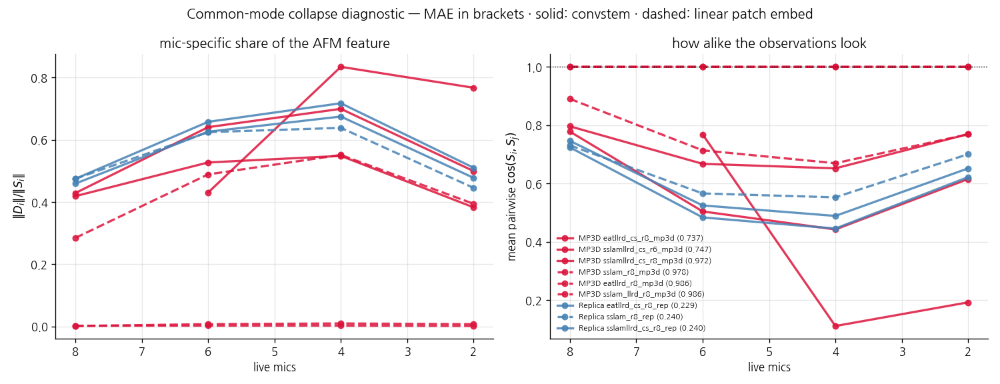
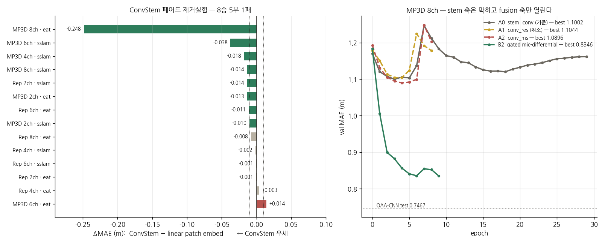
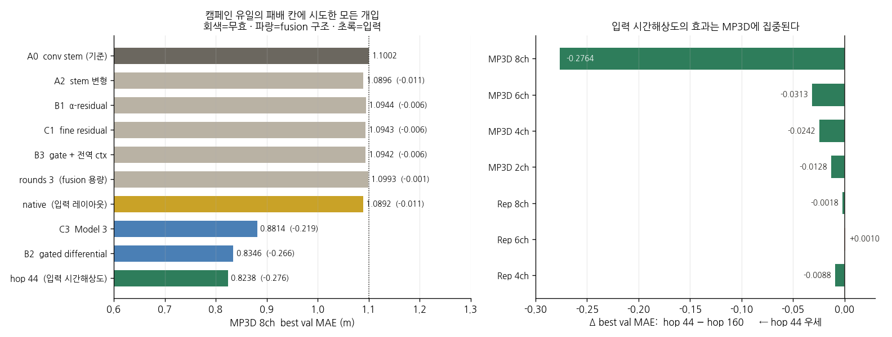

<title>Echo-Depth와 오디오 파운데이션 모델</title>
<link rel="stylesheet" href="https://fonts.googleapis.com/css2?family=Noto+Sans+KR:wght@400;500;700&family=Noto+Serif+KR:wght@400;600&family=IBM+Plex+Mono:wght@400;500&display=swap">
<style>
:root{--bg:#faf9f6;--ink:#22201c;--sub:#6b675f;--line:#e3ded4;--accent:#2e7d5b;--accent2:#b8544f;
      --card:#ffffff;--code:#f1efe9;--win:#e4f2ea;--lose:#f7e8e6}
@media (prefers-color-scheme: dark){:root:not([data-theme="light"]){--bg:#191817;--ink:#e8e5df;--sub:#a29d93;
  --line:#3a3833;--accent:#5fb890;--accent2:#d98a85;--card:#211f1d;--code:#26241f;--win:#1e3529;--lose:#3a2523}}
:root[data-theme="dark"]{--bg:#191817;--ink:#e8e5df;--sub:#a29d93;--line:#3a3833;--accent:#5fb890;
  --accent2:#d98a85;--card:#211f1d;--code:#26241f;--win:#1e3529;--lose:#3a2523}
body{background:var(--bg);color:var(--ink);font-family:'Noto Sans KR',system-ui,sans-serif;
     line-height:1.78;margin:0;padding:0 20px 90px}
main{max-width:820px;margin:0 auto}
h1{font-size:1.8rem;font-weight:700;margin:52px 0 6px;line-height:1.35;text-wrap:balance}
.sub{color:var(--sub);margin:0 0 34px;font-size:.94rem}
h2{font-size:1.28rem;margin:52px 0 14px;padding-top:20px;border-top:1px solid var(--line)}
h3{font-size:1.04rem;margin:30px 0 8px;color:var(--accent)}
p{max-width:72ch;margin:0 0 14px}
b.g{color:var(--accent)} 
.key{background:var(--card);border:1px solid var(--line);border-left:4px solid var(--accent);
     border-radius:6px;padding:16px 20px;margin:20px 0}
figure{margin:24px 0;overflow-x:auto}
figure img{max-width:100%;border:1px solid var(--line);border-radius:6px;background:#fff}
figcaption{color:var(--sub);font-size:.86rem;margin-top:8px;max-width:76ch;line-height:1.6}
.tw{overflow-x:auto}
table{border-collapse:collapse;font-size:.87rem;margin:14px 0;font-variant-numeric:tabular-nums}
th,td{border:1px solid var(--line);padding:5px 10px;text-align:right}
th{background:var(--code);font-weight:500}
td:first-child,th:first-child{text-align:left}
.w{background:var(--win)} .l{background:var(--lose)}
code{font-family:'IBM Plex Mono',monospace;font-size:.86em;background:var(--code);padding:1px 5px;border-radius:4px}
dl{font-size:.93rem;border:1px solid var(--line);border-radius:6px;padding:12px 18px;background:var(--card)}
dt{font-weight:600;color:var(--accent);display:inline}
dd{display:inline;margin:0}
dl div{margin:4px 0}
</style>
<main>
<h1>Generic 오디오 사전학습은 왜 에코 기반 기하 추정으로 전이되는가</h1>
<p class="sub">HEAR-360 인코더 교체 캠페인 보고서 · 2026-08-20 ~ 09-16 · 학습 ~130회, 분석 실험 13종 · <code>hear360/0820_*</code></p>

<h2>1. 서론: 무엇을 주장하고, 무엇을 주장하지 않는가</h2>
<p>이 보고서는 하나의 교체 실험에서 출발한다. 소리의 메아리로 360° 깊이 지도를 복원하는 과제(HEAR-360)에서, 논문의 task-specific CNN 인코더를 범용 오디오 파운데이션 모델(AFM)로 바꾸면 무슨 일이 일어나는가. 상식적인 회의는 두 방향에서 가능하다. 한편으로 AudioSet은 유튜브의 일반 소리로 이루어진 데이터이므로, 그것으로 배운 표현이 "몇 밀리초에 메아리가 도착했는가"라는 기하학적 신호를 도울 이유가 없어 보인다. 다른 한편으로 86M짜리 사전학습 트랜스포머가 15M짜리 스크래치 CNN을 이기는 것은 당연해 보이기도 한다. 이 캠페인의 결과는 두 직관 모두를 기각한다: 아무 AFM이나 붙이면 오히려 CNN보다 나빠지며(§5), 그럼에도 특정한 사전학습 방식을 가진 모델은 올바른 미세조정과 결합될 때 대부분의 평가 조건에서 CNN과 동등하거나 그 이상이 된다(§3).</p>
<p>우리가 주장하는 것은 세 가지다. 첫째, <b>엄격한 동률 규칙(시드 평균 격차 0.01 미만 = 동률) 아래 칸 수준의 결산은 명확한 구조를 갖는다 — 단 이는 칸마다 <i>가장 좋은 AFM 변형</i>을 골라 읽은 것이며, 실제로 배포 가능한 <i>하나의 고정 설정</i>으로는 아직 여덟 칸을 덮지 못한다(§9): AFM이 세 칸 — 관측이 희소한 2ch 두 칸과 어려운 데이터의 MP3D 4ch — 에서 규칙상 이기고, 나머지 다섯 칸은 동률이며, CNN이 규칙상 이기는 칸은 없다. 한때 CNN이 방어하던 MP3D 6ch는 sslam+LLRD+conv stem이 0.7473으로 CNN 0.7502 아래에 들어오면서 동률로 바뀌었다</b> — 그리고 MAE가 동률인 칸에서도 그 내부는 중립이 아니어서, 근거리 정밀은 CNN이, 원거리 오차와 RMSE의 억제는 AFM이 가져가는 체계적 교환이 반복된다(§3). 둘째, 어느 AFM이 잘 되는지는 임의적이지 않다 — <b>사전학습 formulation과 전이 성능 사이에 강하고 해석 가능한 경향</b>이 있으며, 소리의 중첩을 다루도록 학습된 모델(SSLAM)이 정점에 선다. 셋째, 이 이득의 작동 방식을 test-time 조작 실험으로 추적한 결과, <b>CNN의 판독은 초기·국소 단서에 집중되어 있는 반면 SSLAM은 그에 더해 늦은 잔향 구간에 분산된 정보를 활용한다</b>는 그림이 여러 독립 조작에서 일관되게 지지된다.</p>
<p>동시에 우리가 주장하지 않는 것을 분명히 해 둔다. "사전학습 목적함수가 성능을 결정한다"고 말하지 않는다 — 공개 체크포인트들은 목적함수 외의 세부 레시피도 다르므로, 인과 확정에는 목적함수만 바꾼 통제 사전학습이 필요하다(§10). "SSLAM은 첫 메아리를 쓰지 않는다"고도 말하지 않는다 — 증거가 지지하는 것은 배타가 아니라 추가 활용이다(§7). 그리고 시드 간 분산이 ±0.005~0.012에 이르므로, <b>평균 격차 0.01 미만의 비교는 승패가 아니라 동률로 처리</b>한다는 판정 규칙을 본문 전체에 일관되게 적용한다.</p>
<p>마지막으로, 캠페인 후반에 인코더가 아닌 곳에서 더 큰 것이 나왔다. 입력이 백본에 도달하는 경로를 점검한 결과 두 가지 결함이 있었다 — 체크포인트에 든 사전학습 patch embedding을 버리고 있었고, 58.8 ms 창의 실제 STFT 프레임 18개가 512칸으로 28배 복제돼 <b>거리를 인코딩하는 축이 사실상 비어</b> 있었다. 후자를 고치자(STFT hop 160→44) Replica 4ch에서 CNN이 −0.0100, AFM이 −0.0077 움직이며 둘이 같은 값에 착지했다(§9). <b>이 캠페인의 가장 큰 단일 개선은 파라미터를 하나도 늘리지 않는 전처리 변경이고, 인코더 결과가 아니다.</b> 그것을 그렇게 읽을 수 있었던 유일한 이유는 같은 입력으로 CNN을 재학습했기 때문이다.</p>

<h2>2. 과제, 모델, 그리고 판정 규칙</h2>
<p>과제를 구체적으로 그려 두는 것이 이후의 모든 논증에 필요하다. 로봇 리그가 처프를 방출하고, 리그에 부착된 마이크 2·4·6·8개가 각각 58ms 동안 반사음을 녹음한다. 소리가 1m를 왕복하는 데 약 5.8ms가 걸리므로 녹음의 시간축은 곧 거리축이다: 3m 벽의 1차 반사는 17ms 부근, 8m 벽은 47ms 부근에 도착한다. 중요한 것은 녹음의 뒷부분이 단일한 성분이 아니라는 점이다 — 거기에는 먼 표면의 1차 반사와, 가까운 표면들 사이를 여러 번 튕겨 늦게 도착한 다중 반사가 겹쳐 있다. 창은 왕복 10m에서 잘리므로, 룸어쿠스틱에서 말하는 수백 ms짜리 확산 잔향은 어떤 모델도 보지 못한다. 이 사실은 §7의 해석에서 중요해진다.</p>
<p>기준 모델(OAA-CNN)은 마이크별 스펙트로그램을 작은 CNN으로 인코딩한 뒤 마이크의 위치·방향을 아는 기하 attention으로 통합한다. 본 캠페인은 이 구조에서 <b>마이크별 인코더 하나만</b> ViT-B/16 AFM으로 교체하고 — 통합부·디코더·손실·학습 레시피는 전부 고정한다. 성능 차이를 인코더 하나에 귀속시키기 위한 설계다. 평가는 전부 test 세트로 하며(val과 test의 순위가 박빙 구간에서 절반꼴로 뒤집히는 것을 반복 관측했기 때문), 격차가 작은 비교는 시드 2~3개의 평균으로 판정한다.</p>
<dl>
<div><dt>r2/fb/r6/r8</dt> — <dd>마이크 2/4/6/8개 구성.</dd></div>
<div><dt>MAE·near·mid·far</dt> — <dd>평균 절대 오차(m)와, 정답 깊이 3m 미만 / 3–6m / 6m 초과 픽셀에서의 대역별 오차.</dd></div>
<div><dt>LLRD</dt> — <dd>층별 학습률 감쇠(0.75). 사전학습 모델의 아래층은 거의 고정(2e-6), 위층만 적응(5e-5).</dd></div>
<div><dt>vdrop</dt> — <dd>학습 중 일부 마이크 입력을 무작위로 0으로 만드는 정규화.</dd></div>
<div><dt>비교 기준선</dt> — <dd>논문 OAA-CNN(15M) 외에 EchoDiffusion(동결 오디오 백본 + 디퓨전 디코더), Beyond-Image-to-Depth(Parida et al., CVPR'21; ITD 계열 4-분기 어텐션 318M의 오디오 전용 포트, 16칸 완주).</dd></div>
<div><dt>판정 규칙</dt> — <dd>test 기준, 시드 평균 격차 ≥0.01일 때만 승패, 미만은 방향과 무관하게 동률(tie). 2026-09-08에 전 칸을 이 규칙으로 재감사해 0.01 미만의 과거 "승" 라벨을 전부 동률로 강등했다.</dd></div>
</dl>

<h2>3. 결과 I — 판정 매트릭스와 그 내부 구조</h2>
<p>여덟 개의 평가 칸(채널 4 × 데이터셋 2)에 판정 규칙을 기계적으로 적용한 결과가 아래 표다. 가족별 스코어카드로 먼저 요약한다. <b>기본 sslam: 1승 4동률 2패</b>(시드 경화 후) — Replica 2ch는 시드 2개 평균 0.2775로 승을 지켰으나(Δ+0.0119) MP3D 2ch는 0.9000으로 <b>동률로 강등</b>됐고(각주 ⁵), MP3D 6ch(0.8724, Δ−0.122)과 MP3D 8ch(0.9782, Δ−0.232)에서 크게 진다. 이 패는 §5의 법칙이 예고한 것이다: LLRD 없는 기본 레시피는 MP3D에서 원래 불리하며(4ch에서도 0.8335), 그럼에도 기록의 일관성을 위해 패로 기입한다. <b>통일세팅 sslam+LLRD: 0승 6동률 2패</b>(MP3D 8ch 재시도로 확인 중) — 유일한 승이던 MP3D 4ch(llrd65 0.7714)가 시드 2 도착으로 평균 0.7803±0.009의 동률로 강등됐고(각주 ⁴), Replica 네 칸은 전부 동률(그중 8ch은 0.2363으로 캠페인 최고), MP3D 6ch(0.7848, Δ−0.0346)은 규칙상 패다. 이 칸들의 규칙상 승은 eat+LLRD와 conv stem 변형이 지킨다. <b>eat+LLRD: 1승 6동률 1패</b>(시드 경화 후 Replica 2ch가 0.2823으로 동률 강등, 남은 승은 MP3D 4ch) — MP3D 6ch(0.7736, Δ−0.0234)는 캠페인 유일의 규칙상 패다. 여기에 conv stem을 더한 변형(eat+LLRD+cs)은 세 칸에서 규칙상 승을 추가하고(MP3D 4ch 0.7617·MP3D 2ch 0.8884 — 두 신기록, Replica 2ch 0.2754), Replica 8ch에서는 0.2291로 규칙상 동률이되 캠페인 셀 신기록을 세운다(근거리 0.1224까지 CNN 0.1250보다 낮은 전면 우세 방향) — 진입한 여덟 칸 중 패는 MP3D 6ch뿐, 실패는 Rep 4ch뿐으로, 단일 변형으로는 캠페인 최강이다. <b>EchoDiffusion: 0승</b> — 완주 8칸 전부에서 열세이고 다수가 규칙상 패다.</p>
<p>그리고 캠페인 후반에 채운 조합 하나가 이 구도를 바꿨다. <b>sslam + LLRD + conv stem: 3승 4동률 1패</b>로, 지금까지 나온 어떤 AFM 세팅보다 낫다 — 그러나 유일한 패가 어디인지가 §8의 주제가 된다. 이 조합이 마지막까지 비어 있었던 것은 우연이다 — conv stem은 eat에만 붙여 봤고, sslam은 stem을 바꾸지 않은 채로만 돌렸으며, 둘을 합친 유일한 초기 런(Replica 4ch, 0.3017)은 LLRD 도입 전이라 post-norm 백본에 필수인 보정이 빠져 있었다. 합쳐 놓자 Replica 2ch에서 0.2670의 셀 신기록, MP3D 2ch 0.8888과 4ch 0.7744에서 규칙상 승이 나온다. 그러나 가장 중요한 칸은 <b>MP3D 6ch</b>다: 0.7473으로 CNN 0.7502보다 <b>낮은 첫 AFM 기록</b>이며, 규칙상으로는 동률이지만 <b>이로써 CNN이 규칙상 이기는 칸은 여덟 중 하나도 남지 않는다</b>. 직전까지 이 칸은 네 개의 AFM 변형이 차례로 패한 "CNN 요새"였다. 대신 이 조합은 <b>MP3D 8ch에서 0.9723으로 크게 진다</b>. 이 칸은 sslam 계열 전체가 걸려 넘어지는 자리이고, 왜 그런지를 인코더 내부를 직접 측정해 해부한 것이 §8이다.</p>
<p>요컨대 최종 구도는 이렇게 읽힌다: <b>"AFM은 관측이 희소한 2ch 두 칸과 어려운 데이터의 MP3D 4ch에서 규칙상 이기고, 나머지 다섯 칸은 동률이며, CNN이 규칙상 이기는 칸은 없다."</b> 단, 이 문장은 각 칸을 가장 잘 푸는 AFM 변형을 모아 읽은 것이다. 단일한 통일 구조 하나로 여덟 칸을 전부 덮으려 하면 아직 MP3D 8ch가 남는다(§8). 다만 새 조합의 칸들은 아직 단일 시드이고, 이 캠페인에서 단일 시드 승은 다섯 번 시험해 다섯 번 모두 동률로 내려앉았다(§5) — 심판 시드가 대기열에 있으므로 이 문장의 "세 칸 승"은 잠정으로 읽어야 한다.</p>
<div class="tw"><table>
<tr><th>test MAE (m)</th><th>Rep 2ch</th><th>Rep 4ch</th><th>Rep 6ch</th><th>Rep 8ch</th><th>MP3D 2ch</th><th>MP3D 4ch</th><th>MP3D 6ch</th><th>MP3D 8ch</th></tr>
<tr><td>OAA-CNN (논문)</td><td>0.2894</td><td>0.2596</td><td>0.2384</td><td>0.2368</td><td>0.9084</td><td>0.7849</td><td class="w">0.7502</td><td>0.7467</td></tr>
<tr><td>eat+LLRD</td><td class="w">0.2762</td><td>0.2609</td><td>0.2427</td><td>0.2371¹</td><td>0.9018</td><td class="w">0.7717±.002</td><td>0.7736</td><td>0.7395±.011</td></tr>
<tr><td>sslam(+LLRD)</td><td class="w">0.2775±.009⁵</td><td>0.2659±.012² (tie)</td><td>0.2336±.005 (tie)</td><td>0.2363/0.2368³ (tie)</td><td>0.9000±.005⁵</td><td>0.7787±.009⁴</td><td class="l">0.7848</td><td class="l">0.9861⁶</td></tr>
<tr><td><b>sslam+LLRD+cs</b> (신규)</td><td class="w">0.2670⁷</td><td>0.2573±.002</td><td>0.2378</td><td>0.2402</td><td class="w">0.8888</td><td class="w">0.7744</td><td>0.7473⁸</td><td class="l">0.9723⁹</td></tr>
<tr><td>EchoDiffusion</td><td>0.2854</td><td>0.2695</td><td>0.2556</td><td>0.2600</td><td>0.9007</td><td>0.7928</td><td>0.7786</td><td>0.7572</td></tr>
<tr><td>Beyond-I2D (ITD 계열)</td><td class="l">0.3150</td><td class="l">0.3125</td><td class="l">0.2982</td><td class="l">0.2981</td><td class="l">0.9932</td><td class="l">0.8550</td><td class="l">0.8541</td><td class="l">0.8712</td></tr>
</table></div>
<p style="font-size:.88rem;color:var(--sub)">¹Rep 8ch만 vdrop(§5). ²시드 3개(0.2553/0.2636/0.2789) 평균 0.2659±0.012 vs CNN 0.2596 — 격차 +0.006 < 0.01로 동률(방향은 CNN 우세 쪽); sslam의 fb 시드 분산이 유난히 큼. ³vdrop 판: 기본레시피 0.2368(CNN과 정확 동률), 통일레시피(+LLRD) 0.2363 — 한동안 r8 최고였고(현 셀 신기록은 conv stem 변형 0.2291) RMSE·mid·far 전 지표 CNN 우위(MAE 격차 0.0005는 규칙상 동률). r2/r6에서 보이던 LLRD의 Replica 비용이 r8에서는 사라진다. vdrop 없는 판 0.2399. ⁴LLRD 감쇠 0.65: s0 0.7714의 단독 승이었으나 s2 0.7892가 도착해 동률로 강등됐고, 심판 시드 s1(첫 투입은 OOM 즉사 후 재학습) 0.7756이 도착해 <b>3시드 0.7787±0.009</b>로 확정 — 격차 0.0062로 동률(방향 우세)이다. Replica 4ch에서 배운 시드 행운 패턴이 세 시드로 재확인됐다. 이 칸의 규칙상 승 자체는 eat+LLRD(시드 3개 0.7717±0.002)와 conv stem 변형(0.7617)이 독립적으로 유지한다. ⁵기본 sslam의 두 2ch 칸은 시드 1이 도착해 평균으로 갱신됐다: Replica 0.2711/0.2839 → 0.2775(Δ+0.0119, 승 유지·아슬), MP3D 0.8965/0.9035 → 0.9000(Δ+0.0084, <b>동률로 강등</b>). ⁷sslam+LLRD+conv stem은 이 캠페인이 마지막까지 비워 두었던 조합으로, Replica 2ch에서 0.2670의 셀 신기록(기존 sslam 0.2711)이자 규칙상 승이다. 단일 시드이므로 심판 시드가 대기열에 있다. ⁸MP3D 6ch에서 0.7473 — CNN 0.7502보다 낮은 <b>첫 AFM 기록</b>이다. 규칙상으로는 동률(Δ+0.0029)이지만 이 칸이 더 이상 CNN의 승이 아니게 됐다는 뜻이며, 같은 칸에서 앞선 네 AFM 변형은 모두 규칙상 패였다(eat 0.7736 / sslam+LLRD 0.7848 / cs 0.7879 / 기본 sslam 0.8724). ⁹sslam+LLRD+cs의 MP3D 8ch는 0.9723으로 CNN 0.7467 대비 Δ−0.2256의 규칙상 패다. 같은 조합의 Replica 4ch는 시드 2개(0.2560/0.2585) 평균 0.2573±0.002로 CNN 0.2596과 동률이며, eat+LLRD+cs도 시드 2개(0.2644/0.2587) 평균 0.2616으로 동률이다 — 단일 시드에서 보이던 ±0.003 규모의 흔들림이 두 조합 모두에서 동률로 수렴했다. ⁶처음에는 시드 0의 학습 붕괴로 진단하고 판정을 유보했으나, 이후 <b>철회</b>한다: 기본 sslam 판(0.9782)과 시드 1 재시도가 모두 동일한 ~1.10 val 바닥에 걸렸다. 세 독립 런(레시피 2 × 시드 2)이 같은 지점에서 멈추므로 시드 잡음이 아니라 이 칸의 체계적 실패다. 초록 = 판정 규칙상 승(시드 평균 격차 ≥0.01). 격차 0.01 미만은 방향과 무관하게 전부 동률이며, r6 Replica·r8 MP3D처럼 방향이 일관되게 AFM 우세인 동률은 본문에 그렇게 명기한다.</p>
<figure><figcaption><b>그림 1.</b> 채널 수에 따른 test MAE. 모든 모델이 관측이 늘수록 좋아지지만 기울기가 다르며, 이 기울기의 차이가 §4의 주제다. 빨간 선이 캠페인 마지막에 채운 조합(sslam+LLRD+conv stem)으로, MP3D에서 전 채널에 걸쳐 CNN 이하로 내려가며 6ch에서 처음으로 CNN을 통과한다. 초록 선의 MP3D 8ch 급등은 sslam 계열이 이 칸에서 겪는 체계적 실패(§3 각주 ⁶)다. 빨간 선의 MP3D 8ch 급등(0.9723)은 새 조합도 같은 칸에서 무너진다는 뜻이며, §8이 그 원인을 인코더 내부에서 측정해 가른다.</figcaption></figure>
<h3>채널을 따라 읽기</h3>
<p>관측 두 개(2ch)는 삼각측량이 성립하지 않는 구성이고, 여기서 AFM의 이득이 가장 크고 가장 확실하다 — 두 데이터셋 모두 규칙상 승이며, MP3D에서는 세 AFM 판(0.8965/0.8991/0.9018)이 모두 CNN(0.9084) 아래에 있다. 관측 넷(4ch)에서는 데이터셋이 갈린다: 어려운 MP3D에서는 eat+LLRD가 시드 3개 전승(0.7717±0.002)으로 규칙상 승을 지키는 반면(llrd65 판은 시드 평균 0.7803으로 동률 강등), 깨끗한 Replica에서는 sslam 시드 3개 평균 0.2659±0.012로 동률이되 방향은 CNN 쪽이다. 이 칸은 방법론적 교훈도 남겼다 — 첫 시드의 단독 우위(0.2553)가 심판 시드에 의해 시드 행운으로 판명된 사례로, 박빙 칸을 다시드로 판정해야 하는 이유를 자체 증명한다.</p>
<p>관측 여섯(6ch)부터는 기하가 데이터만으로 상당히 결정되는 영역이다. Replica에서 sslam은 시드 3개 평균 0.2336±0.005로 CNN(0.2384)보다 낮지만 격차 0.0048은 규칙상 동률이다 — 다만 세 시드 모두 방향이 sslam 우세이고, 시드 0은 일곱 지표 전부(MAE·RMSE·AbsRel·δ1·근·중·원)를 동시에 이긴 캠페인 유일의 사례다. MP3D 6ch은 CNN이 지표 전반에서 방어하는 유일한 칸이며, 판정은 네 변형 모두에서 끝났다: eat+LLRD Δ−0.0234, 통일세팅 sslam+LLRD Δ−0.0346(0.7848), conv stem 변형 Δ−0.0377(0.7879 — 다른 모든 진입 칸에서 이기거나 비기던 변형조차), 기본 sslam Δ−0.122(0.8724)다. 관측이 기하를 데이터만으로 결정하기에 충분하면서 데이터가 어지러워 강건성의 이득이 남지 않고, 8ch과 달리 중복 관측의 여지도 없는 이 조합이 CNN의 요새다. 대역 구조는 여느 칸과 같은 교환(원거리는 sslam 우세 3.80 vs 3.94)이지만, 관측이 충분한 조건에서 어지러운 데이터의 근·중거리 정밀 손실이 원거리 이득을 압도한다. 관측 여덟(8ch)에서 Replica는 정확한 동률(sslam+vdrop 0.2368 = CNN 0.2368)이고 통일세팅 0.2363이 캠페인 최고이며, MP3D는 eat 시드 3개 평균 0.7395±0.011로 격차 0.0072의 동률(방향 우세)이다.</p>
<h3>동률의 내부 — 근거리는 CNN, 원거리는 AFM</h3>
<p>MAE 동률은 "차이가 없다"를 뜻하지 않는다. 부록 A의 전 지표 표에서 반복되는 구조는, 거의 모든 칸에서 근거리(&lt;3m) 오차는 CNN이 1위이고 원거리(&gt;6m) 오차는 AFM이 1위라는 것이다. 관측이 가장 많아 표현의 여지가 가장 적어야 할 Replica 8ch가 전형이다:</p>
<div class="tw"><table>
<tr><th>Replica 8ch</th><th>MAE</th><th>RMSE</th><th>δ1</th><th>근&lt;3m</th><th>중3–6m</th><th>원&gt;6m</th></tr>
<tr><td>OAA-CNN</td><td>0.2368</td><td>0.4810</td><td class="w">0.8470</td><td class="w">0.1250</td><td>0.6807</td><td>1.5890</td></tr>
<tr><td>sslam+LLRD vd</td><td class="w">0.2363</td><td class="w">0.4718</td><td>0.8460</td><td>0.1305</td><td class="w">0.6698</td><td class="w">1.3952</td></tr>
</table></div>
<p>판정 지표는 0.0005 차의 동률이지만 그 내부는 교환이다: 원거리 −12%, RMSE −2%를 AFM이 가져가고 근거리 +4%를 CNN이 가져간다. 같은 방향의 교환이 Replica 전 채널과 MP3D 다수 칸에서 반복되며(부록 A), 유일한 예외가 위에서 언급한 Replica 6ch 시드 0의 전 지표 전승이다. 이 구조는 §7의 메커니즘 그림 — 초기·국소 단서에 집중한 CNN 대 늦은 잔향의 분산 통계까지 읽는 sslam — 이 출력 지표에 남기는 지문과 방향이 정확히 일치한다. 실무적 함의도 분명하다: 큰 오차의 억제(RMSE)나 먼 표면이 중요한 응용이라면, MAE 동률 칸에서도 AFM을 선택할 이유가 있다.</p>
<p>이 패턴 전체는 우연으로 보기 어렵다. 사전학습 표현의 부가가치는 데이터만으로 답이 결정되지 않을 때 발생한다는 일반 원리를 그대로 따르기 때문이다. 마이크 두 개로는 삼각측량이 성립하지 않아 잔향 통계 같은 간접 증거가 답을 좌우하고 — 그래서 2ch에서 규칙상으로도 이긴다. 관측이 여덟이면 깨끗한 데이터에서는 기하가 거의 결정되어 사전지식의 여지가 줄고 — 그래서 Replica 고채널은 동률로 수렴하되, 데이터가 결정하지 못하는 잔여(원거리·큰 오차)에서만 AFM의 흔적이 남는다. 데이터가 어지러운 MP3D에서는 관측이 많아도 강건한 표현의 값이 일부 남아 — 4ch에서 규칙상 승이 나고 8ch에서도 방향 우세가 유지된다. 요컨대 <b>개선은 "얼마나 많은 칸"의 문제가 아니라 "문제가 어려운 곳, 그리고 지표의 어려운 부분"의 문제</b>이며, 이것이 첫 번째 주장이 정확히 의미하는 바다.</p>
<h2>4. 결과 II — 어느 사전학습이 전이되는가, 그리고 왜 그것이 임의적이지 않은가</h2>
<p>다섯 개의 AFM은 모두 같은 아키텍처(ViT-B/16)와 같은 데이터(AudioSet-2M)를 쓰고, 사전학습에서 "무엇을 맞히도록" 훈련됐는가가 다르다. 만약 전이 성능이 이 차이와 무관하게 뒤섞여 있었다면, AFM의 성공은 그저 규모의 문제였을 것이다. 실제 결과는 정반대다. 그림 5가 보여주듯 다섯 모델의 근거리 오차는 0.005 이내로 붙는다 — 스펙트로그램을 16×16 패치로 자르는 공통 구조가 만드는 타이밍 정밀도의 공통 바닥이다. 모델을 가르는 것은 원거리 오차이고, 그 순서는 목적함수의 성격과 정확히 대응한다: 섞인 소리에서 소스를 복원하는 SSLAM(1.446)이 가장 좋고, 가려진 부분을 재구성하는 EAT(1.546), 의미 정렬이 낀 M2D-CLAP(1.651), 변형 불변성을 배우는 AudioMosaic(1.653), 그리고 "분류에 안 중요한 영역"을 게이트로 차단하는 BAT(1.875)가 가장 나쁘다.</p>
<figure><figcaption><b>그림 5.</b> Replica 4ch의 대역별 오차. 왼쪽(근거리)은 다섯 AFM이 사실상 동일하고, 오른쪽(원거리)이 모델을 가른다.</figcaption></figure>
<p>이 순서가 설득력을 갖는 이유는 각 목적함수가 "무엇을 버리도록" 학습하는지를 생각하면 드러난다. 대조학습은 마스킹된 뷰들 사이의 불변성을 극대화하는데, 잔향 꼬리는 정확히 뷰에 따라 달라지는 종류의 디테일이어서 목적함수가 지우는 방향으로 압력을 받는다. 게이트 기반 모델은 분류에 기여하지 않는 확산 성분을 차단하도록 배우는데, 확산 잔향이야말로 이 과제의 깊이 신호다. 반대로 믹스처 SSL은 겹쳐진 소리를 보존하고 분리하도록 배우며, 멀티마이크 에코 입력은 본질적으로 방향과 지연이 다른 반사들의 중첩이다. 즉 <b>far 오차의 순위는 "잔향 구조를 얼마나 보존하도록 배웠는가"의 순위</b>로 읽힌다. 다만 이 논증에는 명시적 한계가 있다: 공개 체크포인트들은 목적함수 외에 마스킹 전략·증강·최적화 세부도 다르므로, 현재 증거가 정당화하는 문장은 "사전학습 formulation이 전이에 상당한 영향을 준다(substantially influences)"까지이고, "결정한다"는 EAT 체크포인트에서 출발해 믹스처 목적함수만 추가한 통제 사전학습으로 확인해야 한다(§9).</p>

<h2>5. 캠페인의 여정 — 결론에 도달하기까지 기각된 가설들</h2>
<p>위의 결과는 한 번에 얻어진 것이 아니라, 실패의 원인을 하나씩 가설로 세워 검증한 결과다. 이 여정 자체가 결론의 신뢰도를 구성하므로 간추려 기록한다.</p>
<p><b>모든 AFM은 처음에 전패했다.</b> 다섯 백본을 동일한 표준 레시피(사전학습부 학습률 0.1배 균일)로 미세조정하자 여덟 칸 어디서도 CNN을 이기지 못했다(그림 6). 특히 MP3D에서 EAT/SSLAM 계열은 학습 중반에 val이 튀며 무너졌는데, 이는 post-norm 구조에서 학습률이 정점일 때 사전학습 특징이 파괴되는 현상이었다. 층별 학습률 감쇠(LLRD)가 이것을 고쳤고 — eat의 MP3D val이 1.009에서 0.891로 내려와 처음으로 CNN을 넘었다 — 이 발견은 캠페인 전체에서 <b>유일하게 부작용 없는 개입</b>으로 남았다. 다만 Replica에서 관측되던 작은 비용(2ch/6ch에서 0.005~0.009)에 대해 한때 <b>감쇠율 설정의 문제</b>라는 해석을 세웠으나, 두 칸을 다 재고 나서 <b>철회한다</b>. 감쇠를 0.75에서 0.85로 완화하면 Replica 2ch는 0.2805에서 0.2735로 내려가지만(−0.0070), 같은 완화가 Replica 6ch에서는 0.2385에서 0.2408로 <b>올라간다</b>(+0.0023). 두 방향이 상쇄되고 둘 다 판정 규칙의 0.01 미만이므로, 감쇠율에 대해서는 <b>어느 쪽도 주장할 수 없다</b>는 것이 정확한 결론이며 기본값 0.75를 유지한다. 초기에 2ch만 보고 "완화가 낫다"고 적었던 것은 유리한 칸만 인용한 서술이었다. 그림 8은 이 지점을 스펙트럼으로 보여준다: 부주의한 균일 미세조정은 스크래치보다 나쁘고, EchoDiffusion처럼 동결하면 안전하지만 적응이 없으며, LLRD는 "아래층은 사실상 동결, 위층만 적응"이라는 중간 지점으로서 유일하게 기준선을 넘는다.</p>
<figure><figcaption><b>그림 6.</b> 스크리닝(val): 동일 레시피에서 전패. 화살표는 LLRD 적용 효과.</figcaption></figure>
<figure><figcaption><b>그림 8.</b> 사전학습을 다루는 방식의 스펙트럼(MP3D 4ch test).</figcaption></figure>
<p><b>정규화와 구조 개입은 조건부이거나 제로섬이었다.</b> 마이크 드롭(vdrop)은 관측 중복이 충분하고(8ch) 신호가 깨끗한(Replica) 조합에서만 이득이며, 4·6ch에서는 각 시드 3개로 해로움이, MP3D에서는 전 채널에서 해로움이 확인됐다(그림 7) — AFM이 읽는 잔향-통합 입력을 지우는 조작이기 때문이라는 해석과 부합하고, 논문 CNN이 8ch에서만 vdrop을 채택했던 경계와도 일치한다. 근거리 약점을 겨냥한 개입들 — conv 패치 stem, 근거리를 업웨이트하는 AbsRel 손실(강·약 두 용량) — 은 관측이 충분한 깨끗한 조건(Replica 4ch)에서는 근거리를 고치는 만큼 중·원거리를 망치는 자리바꿈에 그쳤다(그림 9). 다만 이 제로섬은 조건부다: 같은 conv stem이 관측이 희소한 2ch에서는 Replica에서도 순이득이 된다(0.2754, 규칙상 승) — 재배분의 여지가 있으려면 먼저 문제가 미결정 상태여야 한다는, §3의 채널 법칙과 같은 구조다. 프론티어 자체를 바깥으로 민 것은 개입이 아니라 백본 교체(SSLAM)뿐이었다는 사실이, "재배분이 아니라 표현이 성능의 한계를 정한다"는 이 캠페인의 중심 교훈이다. 거친 MP3D에서는 채널과 무관하게 근·중거리를 동시에 개선하며 4ch(0.7617)과 2ch(0.8884)의 두 신기록을 세웠다 — 요컨대 conv stem의 값어치는 "문제가 얼마나 미결정이거나 어지러운가"에 종속되며, 깨끗하고 관측이 충분한 단 한 조건(Replica 4ch)에서만 제로섬으로 퇴화한다.</p>
<figure><figcaption><b>그림 7.</b> vdrop 판정(점=시드). Replica 8ch에서만 이득.</figcaption></figure>
<figure><figcaption><b>그림 9.</b> Replica 4ch의 근거리(x)–중거리(y) 평면. eat에 가한 개입들(빨강)은 대각선 위에서 자리만 바꾸고, sslam(초록)만 프론티어 바깥에 있다.</figcaption></figure>
<p><b>비교 모델의 실패도 같은 원리로 설명된다.</b> 디퓨전 기반 EchoDiffusion은 원거리에서 그럴듯한 구조를 채우는 데는 강하지만 8ch에서 6ch보다 오히려 나빠지는 비단조 스케일링을 보인다. 코드 수준에서 원인을 확인했는데, 채널들을 마이크 위치 정보 없이 평균·스택으로만 합치기 때문에 어느 방향의 관측인지 모델이 알 수 없어 6ch에서 정보가 포화된다. 같은 마이크 드롭이 위치-인지 구조(OAA)에는 이득, 위치-맹목 구조(eco)에는 손해였다는 대비가 이 진단의 증거다.</p>

<h2>6. 결과 III — 배치 강건성: 마이크가 죽어갈 때</h2>
<p>지금까지의 판정은 모두 리그가 온전하다는 전제 위에 있었다. 그러나 여덟 개의 마이크를 단 로봇이 현장에서 여덟 개를 끝까지 유지하리라는 보장은 없다. 이 절은 판정 축을 하나 바꾼다: <b>여덟 개로 학습한 모델에서 추론 시점에만 마이크를 하나씩 죽이면 무엇이 남는가.</b> 구현은 학습 때의 mic-drop 증강과 동일한 연산이다 — 해당 채널의 스펙트로그램을 0으로 만들되 포즈 조건화는 그대로 둔다. 즉 "마이크가 사라졌다"가 아니라 "그 자리의 마이크가 침묵한다"이며, 리그 기하가 유지되는 실제 고장 상황에 대응한다. k개를 죽일 때마다 고정 시드 무작위 부분집합 세 개의 평균을 취했고, 채널 수별로 처음부터 학습하는 §3의 매트릭스와는 상보적인 질문이다.</p>
<div class="tw"><table>
<tr><th>model</th><th>출처</th><th>mic-drop 학습</th><th>8mic</th><th>6mic</th><th>4mic</th><th>2mic</th><th>1mic</th><th>ret@1</th></tr>
<tr><td>OAA-CNN +vd(k≤6)</td><td>ours</td><td>yes</td><td>0.2335</td><td>0.2379</td><td>0.2733</td><td class="w">0.3290</td><td class="w">0.4509</td><td class="w">1.93×</td></tr>
<tr><td>eat+LLRD+cs +vd</td><td>ours</td><td>yes</td><td class="w">0.2291</td><td class="w">0.2330</td><td class="w">0.2645</td><td>0.3519</td><td>0.5027</td><td>2.19×</td></tr>
<tr><td>OAA-CNN +vd(k≤4, 논문판)</td><td>ours</td><td>yes</td><td>0.2368</td><td>0.2413</td><td>0.2758</td><td>0.3608</td><td>0.5272</td><td>2.23×</td></tr>
<tr><td>sslam+LLRD +vd</td><td>ours</td><td>yes</td><td>0.2363</td><td>0.2396</td><td>0.2709</td><td>0.3703</td><td>0.5907</td><td>2.50×</td></tr>
<tr><td>sslam +vd</td><td>ours</td><td>yes</td><td>0.2368</td><td>0.2420</td><td>0.2753</td><td>0.3814</td><td>0.6014</td><td>2.54×</td></tr>
<tr><td>eat+LLRD +vd</td><td>ours</td><td>yes</td><td>0.2371</td><td>0.2417</td><td>0.2768</td><td>0.3914</td><td>0.6142</td><td>2.59×</td></tr>
<tr><td>eat+LLRD</td><td>ours</td><td>no</td><td>0.2535</td><td>0.5811</td><td>0.6832</td><td>0.7530</td><td>0.7937</td><td>3.13×</td></tr>
<tr><td>sslam+LLRD</td><td>ours</td><td>no</td><td>0.2424</td><td>0.4176</td><td>0.5819</td><td>0.7933</td><td>0.9790</td><td>4.04×</td></tr>
<tr><td>EchoDiffusion +chdrop</td><td>prior</td><td>yes</td><td>0.2722</td><td>0.2915</td><td>0.4069</td><td>0.6488</td><td>0.8826</td><td>3.24×</td></tr>
<tr><td>sslam</td><td>ours</td><td>no</td><td>0.2399</td><td>0.4482</td><td>0.5827</td><td>0.7249</td><td>0.7995</td><td>3.33×</td></tr>
<tr><td>EchoDiffusion</td><td>prior</td><td>no</td><td>0.2600</td><td>0.4696</td><td>0.7053</td><td>0.7795</td><td>0.9221</td><td>3.55×</td></tr>
<tr><td>BatVision</td><td>prior</td><td>no</td><td>0.2732</td><td>0.5319</td><td>0.8195</td><td>0.9420</td><td>1.1059</td><td>4.05×</td></tr>
<tr><td>OAA-CNN</td><td>ours</td><td>no</td><td>0.2668</td><td>0.4854</td><td>0.7135</td><td>0.9629</td><td>1.0904</td><td>4.09×</td></tr>
<tr><td>ViT-B</td><td>prior</td><td>no</td><td>0.2860</td><td>0.5091</td><td>0.7097</td><td>0.7985</td><td>0.9331</td><td>3.26×</td></tr>
<tr><td>Beyond-I2D</td><td>prior</td><td>no</td><td>0.2981</td><td>0.5172</td><td>0.7188</td><td>0.8466</td><td>0.9453</td><td>3.17×</td></tr>
<tr><td>ResNet-18</td><td>prior</td><td>no</td><td>0.3763</td><td>0.7646</td><td>1.0386</td><td>1.0340</td><td>1.1636</td><td>3.09×</td></tr>
<tr><td>EchoScan</td><td>prior</td><td>no</td><td>0.3400</td><td>0.6678</td><td>1.0267</td><td>1.5283</td><td>1.4131</td><td>4.16×</td></tr>
</table></div>
<p style="font-size:.88rem;color:var(--sub)">Replica test(off3) MAE(m). 전 16모델·짝수 채널만 실었고 전체(8·7·6·5·4·3·2·1)는 <code>analysis/micdrop_study/table.md</code>에 있다. ret@1 = MAE(1mic)/MAE(8mic), 낮을수록 완만한 곡선. "mic-drop 학습" 열은 <b>학습 시</b> 마이크 드롭 증강을 보았는지를 가리키며, 선행 연구 중에는 EchoDiffusion만 자체 채널 드롭아웃 판을 갖고 있다. 초록 = 해당 열 1위.</p>
<figure><figcaption><b>그림 11.</b> 추론 시 마이크 고장 곡선(왼쪽 선형, 오른쪽 로그). 파랑·청록 = 우리 계열, 주황·빨강 = 선행 연구, 실선 = mic-drop 학습판, 점선 = 미학습판. 실선 두 줄(OAA-CNN +vd)이 전 구간에서 아래에 깔린다.</figcaption></figure>
<p>표가 말하는 것은 두 층으로 갈린다. 먼저 <b>mic-drop 증강 없이는 어떤 방법도 우아하게 무너지지 않는다.</b> 우리 것이든 선행 연구든 ret@1이 3.1~4.2배 사이에 몰려 있고, 8→6마이크 구간에서 이미 BatVision +95%, EchoDiffusion +81%, 우리 CNN +82%로 비슷하게 붕괴한다. 이 조건만 보면 아키텍처 간 차이는 크지 않다 — 이것이 증강을 통제했을 때의 정직한 그림이다.</p>
<p>그러나 <b>증강을 켜는 순간 격차가 열린다.</b> OAA-CNN에 mic-drop 학습을 주면 ret@1이 4.09배에서 1.93배로 떨어지고, 8→6마이크에서의 손실이 +82%에서 <b>+1.8%</b>로 사라진다. 여섯 개까지는 사실상 무손상이며, 마이크가 <b>둘</b>만 남아도 0.329로 — 선행 연구가 <b>여덟 개를 모두 쓸 때</b> 도달하는 값(BatVision 0.273, EchoDiffusion 0.260, EchoScan 0.340)과 같은 영역에 있다. 하나만 남아도 0.451로 BatVision의 1.106보다 2.5배 낫다.</p>
<p>통일세팅(sslam+LLRD)의 증강 없는 판은 같은 레시피에서 플래그 하나만 끈 대조군이라 이 절의 가장 깨끗한 짝비교를 제공한다: 8마이크에서 0.2424 대 0.2363(증강판)으로 0.0061 차이지만, 마이크가 하나 남으면 0.9790 대 0.5907로 <b>0.39m</b>까지 벌어진다. 증강의 값은 온전한 리그에서는 거의 보이지 않고 리그가 무너질수록 커진다 — §3의 8ch 판정이 동률로 수렴했던 것과 이 절의 격차가 공존하는 이유다.</p>
<p>덧붙여 ret@1만으로 순위를 매기면 안 된다는 점이 이번 전수 측정에서 드러난다. ResNet-18은 ret@1이 3.09배로 우리 미증강 CNN(4.09배)보다 "완만"하지만 이는 출발점이 이미 나쁘기 때문이며(8마이크 0.3763), 절대값은 전 구간에서 최하위권이다. 같은 이유로 Beyond-I2D(3.17배)·ViT-B(3.26배)의 완만함도 강건성이 아니라 낮은 천장의 부산물이다. ret@1은 곡선의 모양을 요약할 뿐이고, 배치에서 중요한 것은 절대 오차 — 그 기준으로 보면 증강을 받은 우리 여섯 판이 모든 마이크 수에서 나머지 아홉을 앞선다.</p>
<p>결정적인 대조는 EchoDiffusion이 제공한다. 이 모델은 선행 연구 중 유일하게 자체 채널 드롭아웃 판(chdrop)을 갖고 있어 "증강만 있으면 되는가"를 직접 물을 수 있다. 답은 아니오다: chdrop은 ret@1을 3.55배에서 3.24배로 개선하는 데 그치고, 6마이크에서 0.292로 우리 판(0.238)과 벌어진 채 자기 자신의 8마이크 성능(0.260)조차 회복하지 못한다. <b>같은 종류의 증강을 받고도 회복 폭이 우리의 6분의 1 수준이라는 사실은, 강건성이 증강 그 자체가 아니라 증강이 무엇 위에서 작동하느냐에서 나온다는 것을 시사한다</b> — 우리 쪽에서 그 "무엇"에 해당하는 것은 마이크의 위치·방향을 아는 기하 attention이고, 죽은 마이크가 생기면 그 슬롯만 비우고 남은 관측을 기하적으로 재통합할 수 있다. 반면 채널을 위치 정보 없이 평균·스택으로 합치는 구조(§5에서 EchoDiffusion의 비단조 채널 스케일링을 진단할 때와 같은 성질)에서는 죽은 채널이 통계를 오염시킨 채 섞여 든다.</p>
<p>AFM 인코더는 증강이 없을 때 이 축에서 중간에 선다. sslam(3.33×)과 eat+LLRD(3.13×)는 같은 조건의 우리 CNN(4.09×)보다 완만하고, 4마이크 이하에서 CNN을 앞지른다 — §7의 메커니즘 그림(초기·국소 단서에 집중한 CNN 대 늦은 잔향에 분산된 AFM)이 예측하는 방향이며, 관측이 희박해질수록 분산 표현이 버틴다. 다만 그 이득은 mic-drop 학습이 주는 이득보다 한 자릿수 작다.</p>
<p><b>그리고 증강은 백본을 가리지 않고 전이된다.</b> AFM 계열 네 판(eat+LLRD, +cs, sslam, sslam+LLRD)에 mic-drop 학습을 주면 ret@1이 예외 없이 3.1~4.0배에서 2.19~2.59배로 내려가 CNN 학습판(1.93~2.23배)과 같은 띠에 들어간다(그림 11에서 파란 실선 다섯 줄이 한 덩어리로 아래에 깔린다). 6마이크까지의 손실도 마찬가지로 사라진다: eat+LLRD+cs +vd는 8→6마이크에서 0.2291→0.2330으로 <b>+1.7%</b>, sslam+LLRD +vd는 +1.4%다. 즉 앞 문단의 "우리 CNN만 강건하다"는 읽기는 틀렸고, 정확한 문장은 <b>"증강×위치-인지 구조의 조합이 강건하며, 그 조합 안에서는 인코더 계열이 거의 무관하다"</b>이다.</p>
<p>그 띠 안에서의 순위는 다시 두 갈래로 갈린다. 마이크가 여덟에서 셋까지 남은 구간에서는 <b>conv stem을 얹은 AFM(eat+LLRD+cs +vd)이 전 구간 1위</b>이며 8마이크에서 0.2291로 캠페인 최고 기록이기도 하다(§3). 반면 둘·하나만 남는 극단에서는 <b>OAA-CNN +vd(k≤6)</b>가 앞선다(0.3290 / 0.4509). 이 역전은 인코더가 아니라 <b>학습 시 드롭이 어디까지 갔는가</b>로 설명된다: kany는 k≤6, 즉 살아있는 마이크가 둘인 상태까지 학습에서 보았고, 나머지 모든 판(CNN 논문판과 AFM 세 판)은 k≤4 — 넷까지만 보았다. 극단 꼬리에서 이기는 것은 그 꼬리를 학습 분포 안에 넣어 둔 모델이며, 이는 백본 교체로는 얻을 수 없고 증강 설정 하나로 얻을 수 있는 종류의 이득이다.</p>
<p>실무적으로 정리하면 이렇다. <b>배치에서 마이크 고장을 감당해야 한다면 결정적인 선택은 백본이 아니라 mic-drop 증강이고, 그 증강은 위치-인지 통합 구조 위에서만 제값을 하며, 감당해야 할 최악의 마이크 수를 학습 분포 안에 넣어 두어야 한다(k 상한을 그만큼 올린다).</b> 이 결론은 §3의 채널별 판정과 독립적이며, 실제로 §3에서 동률로 수렴하던 8ch 조건이 여기서는 가장 큰 격차를 만든다.</p>

<h2>7. 결과 IV — 메커니즘: 관찰과 가설을 분리한 논증</h2>
<p>성능 표만으로는 "왜"에 답할 수 없다. 우리는 학습을 추가하지 않고, 이미 학습된 세 모델(CNN, eat, sslam)에 조작된 test 입력을 주어 성적 하락을 측정하는 방식으로 메커니즘을 추적했다. 데이터의 파형이 렌더링된 임펄스 응답이고 직접음 — 스피커에서 벽을 거치지 않고 귀로 오는, 방 정보가 전혀 없는 성분 — 이 모든 장면에서 정확히 49번째 샘플에 폭 1.5ms로 고정되어 있음을 먼저 확인했기에, 시간 기준의 절단이 유효하다. 아래에서 각 실험이 <b>직접 보여주는 것</b>과 <b>그로부터 세운 가설</b>을 구분해 서술한다.</p>
<p><b>초기 구간을 지우면 CNN이 가장 크게 무너진다.</b> 직접음을 포함한 왕복 1m 구간을 지우자(장면 정보는 거의 지워지지 않는 조작이다) CNN은 +0.706, sslam은 +0.293 악화됐다 — 상대 하락률로도 272% 대 115%다. 이것이 직접 보여주는 것은 CNN의 판독이 초기 음향 정보에 훨씬 민감하다는 사실이다. 다만 지워진 것에는 도착시각의 앵커, 초기 에너지, 국소 스펙트럼이 함께 들어 있으므로, "그중 무엇인가"는 이 실험만으로 구분되지 않는다 — 직접음의 위치만 옮기는 조작과 크기만 바꾸는 조작을 분리한 후속 실험(G)이 이를 판정한다. "큰 신호가 빠져 입력 통계가 뒤틀린 탓"이라는 대안 가설은 통제 실험으로 기각했다: 지운 뒤 전체 에너지를 복원해도 세 모델 모두 회복되지 않고 오히려 악화됐다. 물론 이 통제가 배제하는 것은 전역 에너지 설명까지이며, 국소 포락선·스펙트럼 분포의 변화까지 배제하지는 않는다.</p>
<p><b>SSLAM의 추가 정확도는 늦은 구간에 의존하며, 그 의존은 분산되어 있다.</b> 꼬리를 자르는 위치를 9m에서 3m까지 옮겨가며 측정하면(그림 2), 3–6m 표면들의 1차 도착 창을 전혀 건드리지 않는 마지막 8–10m 구간의 삭제만으로 sslam의 중거리 우위(−0.043)가 사라지고, 절단을 앞으로 당길수록 절벽 없이 매끄럽게 악화된다. 강조하건대 이것은 sslam이 1차 메아리를 쓰지 않는다는 뜻이 아니다 — 1차 정보에 <b>더해</b> 활용하는 늦은 잔향 관측이 우위분의 출처라는 뜻이며, 절벽의 부재는 그 출처가 특정 시점이 아니라 꼬리 전체에 얇게 분산되어 있음을 보인다. 하나의 단서에 집중된 표현(CNN의 온셋)은 그 단서가 사라질 때 급락하고, 분산된 표현은 어느 조각을 빼앗아도 완만하게만 나빠진다 — 두 실험의 붕괴 곡선 모양 자체가 표현의 구조를 드러내는 셈이다.</p>
<figure><figcaption><b>그림 2.</b> 꼬리 절단 위치 스윕. 점선은 무절단 성적.</figcaption></figure>
<p><b>구간별 구멍내기는 이 그림을 셀 단위로 보여준다.</b> 2m 폭의 시간대를 하나씩 지우고 어느 거리대가 망가지는지 측정한 대미지 매트릭스(그림 3)에서, CNN은 대각 성향 — 원거리 성적은 원거리 슬롯을 지울 때(+0.123) 떨어진다 — 을 보이는 반면, sslam은 원거리 슬롯을 지워도 원거리 오차가 +0.019밖에 늘지 않는다. 먼 표면의 1차 반사 없이도 원거리 예측이 거의 유지된다는 이 관찰은 강력하지만, 해석에는 대안이 남는다: 남은 음향 증거로부터의 재구성일 수도, "이런 근거리 구조의 방이면 먼 벽은 대개 이 정도"라는 학습 데이터의 방 모양 prior일 수도 있다. 두 해석은 근·중거리 기하는 같고 먼 벽만 다른 반사실 샘플에서 예측이 실제 벽을 따라가는지로만 구분되며, 이는 §10의 미해결 항목이다.</p>
<figure><figcaption><b>그림 3.</b> 대미지 매트릭스: 행=지운 시간대, 열=하락한 거리대, 숫자=ΔMAE.</figcaption></figure>
<p><b>꼬리의 "무엇"을 읽는가에 대한 첫 답은 셔플 실험이 준다.</b> 6m 이후를 지우는 대신 0.2m 블록 단위로 순서만 뒤섞자 — 에너지는 보존된다 — 세 모델 모두 사실상 무손상이었다(Δ+0.003~0.008; 삭제 시 +0.09~0.15). 직접 보여주는 것은 0.2m 스케일의 전역 배열이 중요하지 않다는 사실이고, 노치에서 6–8m을 지우나 8–10m을 지우나 피해가 삭제된 에너지 양에 비례했다는 관찰과 합치면, 모델들이 꼬리에서 얻는 것은 정밀한 도착 시각의 목록이 아니라 잔향의 분산된 특성이라는 해석이 자연스럽다. 다만 블록 내부의 국소 무늬는 보존되었으므로 "전역 통계만 읽는다"와 "국소 조각들을 순서 무관하게 모아 쓴다"는 아직 갈리지 않았다 — 블록 크기를 0.02m까지 줄여가는 스윕(H)이 sslam이 요구하는 시간 해상도를 직접 측정한다.</p>
<figure><figcaption><b>그림 4.</b> 네 조작의 피해량 비교. 온셋 삭제는 CNN에 파멸적, 에너지 복원은 무효, 꼬리 셔플은 전원 무해.</figcaption></figure>
<p><b>이 비대칭은 학습의 우연이 아니다.</b> 독립적으로 다시 학습된 모델들(CNN 동일구조 재학습판, sslam 시드 1, sslam LLRD판)에서 같은 방향의 비대칭이 전부 재현됐다 — 온셋 삭제 시 CNN이 1.55배 더 붕괴, 꼬리 의존은 AFM이 4~7배. 정직하게 덧붙이면, 개별 교란 효과의 크기는 시드에 따라 상당히 변동한다(8–10m 의존도 0.195→0.040). 따라서 정성적 비대칭은 모델 계열의 특성으로 신뢰할 수 있으나, 특정 수치를 메커니즘의 고정 상수처럼 인용해서는 안 되며, 메커니즘 그림은 시드 평균±표준편차로 제시되어야 한다(보강 실험 진행 중).</p>
<div class="key"><b>종합하면</b>, 증거가 가장 자연스럽게 지지하는 그림은 배타적 이분법이 아니다. CNN과 SSLAM 모두 초기 메아리를 사용한다. 그러나 CNN의 표현은 초기·국소 단서에 집중되어 있어 그 단서의 교란에 급격히 취약하고, SSLAM은 같은 정보에 더해 늦은 잔향 필드에 분산된 증거를 활용할 수 있어 어떤 단일 단서가 사라져도 하락이 완만하다. 이 능력이 하필 소리의 중첩을 다루도록 사전학습된 모델에서 나타난다는 사실은, generic 오디오 사전학습이 에코 기하로 전이되는 이유에 대한 일관된 설명을 제공한다.</div>

<h3>인과 간극을 닫는 대조 실험 네 건의 결과</h3>
<p>§7 말미에 예고했던 네 실험이 완료되었고, 결과는 본문의 해석을 대체로 강화하되 두 지점에서 수정한다.</p>
<p><b>G — 직접음의 시각과 크기를 분리하면, 모델을 가르는 것은 진폭 쪽이다.</b> 직접음의 위치를 0.2m만큼 옮기되 크기를 보존하면 세 모델 모두 크게 무너진다(Δ +0.59~+0.74; CNN/sslam 비 1.26). 반면 위치를 보존한 채 크기를 4분의 1로 줄이면 CNN이 +0.463, sslam이 +0.175로 <b>2.7배의 비대칭</b>이 나타난다. 즉 직접음을 시간 기준점으로 삼는 것은 세 모델의 공통 전략이고, CNN을 특별히 취약하게 만드는 것은 "메아리가 직접음 대비 얼마나 작은가"라는 <b>진폭 보정에의 의존</b>이다. 실험 A에서 분리하지 못했던 두 요소가 이렇게 갈라진다: CNN의 판독은 타이밍과 진폭 단서를 모두 쓰되, 모델 간 차이의 주성분은 진폭 쪽이다.</p>
<p><b>H — 셔플 블록을 0.02m까지 줄여도 무해하다.</b> 블록 크기를 1m에서 0.02m까지 다섯 단계로 줄이며 꼬리를 뒤섞어도 모든 모델의 Δ가 +0.009 이하에 머문다. 앞서 열어 두었던 "국소 조각들을 순서 무관하게 모아 쓴다"는 bag-of-patches 해석까지 이것으로 기각된다 — sslam이 꼬리에서 요구하는 시간 해상도는 사실상 없으며, 활용되는 것은 STFT 창 수준에서 살아남는 광대역 에너지·스펙트럼 포락, 즉 집계 통계다. 이는 셔플 결과와 노치의 에너지-비례 피해를 관통하는 가장 단순한 설명이다.</p>
<p><b>I — 1차 창과 꼬리의 상호작용은 sslam에서만 저가산적이다.</b> 3–6m 창과 8–10m 꼬리를 각각 지웠을 때의 mid 피해 합(0.994)이 동시에 지웠을 때의 피해(0.943)보다 크다 — sslam의 두 정보원은 부분적으로 중복이어서 하나가 사라지면 다른 쪽이 일부를 대체한다. 같은 계산이 CNN과 eat에서는 초가산적으로 나온다(각각 0.167→0.224, 0.819→1.093). 분산·중복 인코딩이라는 표현 구조의 주장에 대해, 이는 붕괴 곡선의 모양을 넘어서는 정량적 상호작용 증거다.</p>
<p><b>F+ — 시드 복제는 비대칭의 방향을 보존하되 한 주장을 철회하게 한다.</b> 독립 학습본들에서 sslam의 꼬리 의존은 놀랄 만큼 안정적이고(latecut6 Δ = 0.113/0.109/0.133), 셔플 무해성도 전원 재현된다(≤0.016). 그러나 CNN의 latecut 피해는 체크포인트에 따라 0.146에서 0.030까지 다섯 배를 오간다 — 재학습판(vw)의 레시피에 뷰 가중이 포함되어 순수한 시드 복제가 아니라는 한계까지 감안하면, "CNN도 꼬리에 크게 의존한다"는 비교 문장은 근거가 불안정하므로 철회한다. CNN에 관한 강한 주장은 시드 간 재현된 조작들 — 온셋 삭제(1.55~2.4배)와 진폭 축소(2.7배) — 위에만 세운다.</p>
<figure><figcaption><b>그림 10.</b> 독립 학습본별 조작 피해량(점 = 개별 모델, 막대 = 평균). sslam의 수치는 조작 전반에서 안정적이고, CNN의 latecut 피해만 체크포인트에 따라 크게 변동한다.</figcaption></figure>
<h2>8. 결과 V — MP3D 8ch 실패의 해부, 그리고 stem에서 fusion으로</h2>
<p>§3의 매트릭스에는 설명되지 않은 칸이 하나 남아 있다. sslam 계열은 MP3D 8ch에서 예외 없이 0.97~0.99에 갇힌다 — 관측이 가장 많은 칸에서, 관측이 절반인 6ch(0.7473)보다 크게 나쁘다. 관측을 더 주는데 성능이 무너진다는 것은 정보의 문제가 아니라 구조의 문제라는 신호다. 이 절은 그 칸을 출력이 아니라 <b>인코더 내부를 직접 측정해</b> 해부하고, 그 결과가 다음 설계 단계를 어디로 보내는지를 기록한다.</p>
<h3>측정: 관측들이 서로 구별되는가</h3>
<p>AFM은 마이크별로 완전히 독립적으로 전진하며, 포즈·요·귀 정보가 일절 들어가지 않는다. 따라서 토큰 <i>n</i>은 모든 마이크에서 같은 시간–주파수 패치를 뜻하고, 관측 <i>i</i>의 토큰 S<sub>i</sub>에 대해 공통 성분 S̄ = mean<sub>j</sub> S<sub>j</sub>와 마이크 고유 성분 D<sub>i</sub> = S<sub>i</sub> − S̄를 정의하는 것이 의미를 갖는다. 두 통계를 잰다: <b>dratio</b> = ‖D<sub>i</sub>‖/‖S<sub>i</sub>‖(마이크 고유 신호의 비중)와 <b>cos</b> = 마이크 쌍 평균 코사인 유사도(1.0이면 여덟 관측이 백본에게 구별되지 않는다는 뜻). 평가 파이프라인은 건드리지 않은 읽기 전용 순전파다(<code>analysis/diff_stats.py</code>).</p>
<div class="tw"><table>
<tr><th>run</th><th>stem</th><th>test MAE</th><th>8mic dratio</th><th>8mic cos</th><th>6mic</th><th>4mic</th><th>2mic</th></tr>
<tr><td>MP3D · eat+LLRD+cs</td><td>conv</td><td class="w">0.7373</td><td>0.419</td><td>0.796</td><td>0.527/0.667</td><td>0.548/0.652</td><td>0.383/0.769</td></tr>
<tr><td>MP3D · sslam+LLRD+cs</td><td>conv</td><td class="l">0.9723</td><td>0.429</td><td>0.778</td><td>0.641/0.504</td><td>0.700/0.442</td><td>0.500/0.615</td></tr>
<tr><td>MP3D · sslam</td><td>linear</td><td class="l">0.9782</td><td><b>0.001</b></td><td><b>1.000</b></td><td>0.007/1.000</td><td>0.010/1.000</td><td>0.007/1.000</td></tr>
<tr><td>MP3D · eat+LLRD</td><td>linear</td><td class="l">0.9858</td><td><b>0.002</b></td><td><b>1.000</b></td><td>0.003/1.000</td><td>0.003/1.000</td><td>0.001/1.000</td></tr>
<tr><td>MP3D · sslam+LLRD</td><td>linear</td><td class="l">0.9861</td><td>0.285</td><td>0.890</td><td>0.489/0.714</td><td>0.551/0.669</td><td>0.394/0.769</td></tr>
<tr><td>Replica · sslam</td><td>linear</td><td>0.2399</td><td>0.475</td><td>0.731</td><td>0.625/0.566</td><td>0.638/0.552</td><td>0.446/0.700</td></tr>
<tr><td>Replica · sslam+LLRD+cs</td><td>conv</td><td>0.2402</td><td>0.459</td><td>0.746</td><td>0.626/0.525</td><td>0.675/0.489</td><td>0.478/0.652</td></tr>
</table></div>
<p style="font-size:.88rem;color:var(--sub)">6/4/2mic 열은 dratio/cos를 함께 적은 것으로, 해당 개수만 남기고 나머지 채널을 0으로 만든 상태에서 잰 값이다. 각 행은 test 분할 40배치.</p>
<figure><figcaption><b>그림 12.</b> 마이크 고유 성분의 비중(왼쪽)과 관측 간 유사도(오른쪽). 빨강 = MP3D, 파랑 = Replica, 실선 = conv stem, 점선 = linear patch embed. 오른쪽 위 1.0 선에 붙어 있는 두 점선이 붕괴한 인코더다 — 채널을 여섯 개 0으로 만들어도 값이 움직이지 않는다.</figcaption></figure>
<p>여기서 두 가지가 갈린다. 첫째, <b>MP3D 8ch 실패의 일부는 문자 그대로 인코더의 common-mode 붕괴다.</b> linear patch embed를 쓴 두 런은 여덟 관측의 토큰맵이 소수점 넷째 자리까지 동일하고(cos = 1.0000), 마이크 고유 성분이 feature norm의 0.1~0.2%에 불과하다. 채널 여섯 개를 0으로 만들어도 이 값이 변하지 않는다는 것은 인코더 출력이 사실상 입력과 무관해졌다는 뜻이다. 그리고 이것은 <b>데이터셋 특유의 현상</b>이지 stem 자체의 결함이 아니다 — 같은 linear stem을 쓴 Replica의 sslam은 0.475/0.731로 멀쩡하다. conv stem은 이 붕괴를 확실히 되돌린다(cos 1.000 → 0.778).</p>
<p>둘째, 그리고 더 중요하게, <b>붕괴를 고치는 것과 성능이 나는 것은 별개다.</b> sslam+LLRD+cs는 붕괴 지표에서 이 칸의 유일한 성공 사례(eat+LLRD+cs, 0.419/0.796)와 구별되지 않고 Replica의 건강한 런들과도 같은 구간에 있는데, MAE는 0.9723 대 0.7373이다. 마이크별 구조가 dratio 0.43으로 분명히 존재하는데도 여덟 관측을 합치는 단계에서 소실된다. 즉 이 칸은 <b>인코더 실패가 아니라 통합부(fusion) 실패</b>다.</p>
<h3>그 진단이 곧바로 시험된다</h3>
<p>진단이 맞다면 stem을 더 손보는 것은 이 칸에서 소용이 없어야 한다. 그래서 stem 축과 fusion 축을 같은 칸에서 동시에 열었다. stem 축은 현행 conv(A0)에 더해 시간축 수용영역을 늘린 residual 3×5 stem(A1), 시간 팽창 2분기 stem(A2), 주파수 3×1 후 시간 1×5로 분해한 stem(A3) — 모두 stem 파라미터 증가 10% 이내(+5.8/+3.8/+0.9%), 전체 FLOPs 증가 +4.1/+2.7/+0.7%다. fusion 축은 D<sub>i</sub>를 게이트된 잔차로 되돌려 넣는 변형(B2)이다: Z<sub>i</sub> = S<sub>i</sub> + g<sub>i</sub> ⊙ P(D<sub>i</sub>), g는 [Pool(S<sub>i</sub>); Pool(D<sub>i</sub>); 마이크 임베딩]에서 나오는 채널별 게이트이며 P는 zero-init, 게이트 바이어스는 −2(σ≈0.12)에서 출발한다 — 초기화 시점에 기존 모델과 <b>비트 단위로 동일</b>함을 확인했다.</p>
<figure><figcaption><b>그림 13.</b> 왼쪽: LLRD를 고정하고 stem만 linear ↔ conv로 바꾼 14칸 페어드 제거실험(초록 = 규칙상 conv 우세, 회색 = 동률, 빨강 = 규칙상 열세). 오른쪽: MP3D 8ch의 val 곡선 — stem 변형 셋은 A0와 같은 벽에 갇히고, fusion 변형만 그 벽을 통과한다.</figcaption></figure>
<p>결과는 진단대로다. A1·A2는 ep8까지 1.1782/1.2034로 A0의 30에폭 최고치 1.1002를 넘지 못한 채 같은 자리에 머물렀고, B2는 ep2에 이미 0.899로 그 벽을 통과해 ep9에 0.8346에 도달했다(이후 ep14에 1.19로 붕괴 분지에 되돌아갔다 — 벽은 넘되 그 해가 불안정하다는 뜻이며, §9에서 같은 현상이 hop 44 런에서도 관측된다). 이 시점에서 stem 축에 남은 GPU를 fusion 축으로 돌렸고, MP3D 8ch의 A1/A3 런은 취소했다. 다만 <b>이 결론은 "stem이 무용하다"가 아니다</b> — 정반대로, conv stem 자체는 §3 전반의 이득을 지탱한다. 그림 13 왼쪽이 그 근거다: LLRD를 고정하고 stem만 바꾼 14칸에서 conv는 <b>8승 5무 1패</b>이고, 근거리 오차가 12칸에서, δ1이 12칸에서 개선된다. 원래 목표였던 "CNN이 지키던 근거리 정밀의 회수"에 정확히 작동하는 것이다. 요점은 conv stem이 <b>인코더 처방으로서 유효하고 이미 채택되었으며</b>, 그 위에서 stem을 더 정교화하는 것으로는 남은 fusion 실패가 풀리지 않는다는 것이다.</p>
<div class="key"><b>이 절의 진단은 맞았고, 처방은 둘이었다.</b> 실패 모드의 분해(인코더 common-mode 붕괴 / 관측 통합부에서의 마이크 고유 정보 소실)와, 붕괴를 고쳐도 MAE가 따라오지 않는다는 관찰은 유효하다. 위 진단에 따라 만든 마이크 차분 게이트 B2는 이 칸을 실제로 푼다 — test <b>0.7276</b>으로 CNN 0.7467을 규칙상 이긴다. 그런데 §9에서 보듯 <b>아키텍처를 전혀 바꾸지 않고 STFT hop만 160→44로 바꾼 동일 모델이 0.7275</b>로, 차이가 <b>0.0001</b>이다. 즉 이 칸은 서로 전혀 다른 두 경로로 같은 지점에 도달한다.<br><br><b>정정:</b> 이 보고서는 한때 val(0.8238 대 0.8346)을 근거로 "입력이 구조 개입 전부를 앞선다"고 적었다. test에서 그 격차는 사라지므로 <b>그 서술을 철회한다</b>. 남는 것은 순위가 아니라 비용의 비대칭이다 — 입력 쪽은 파라미터 추가 0개에 한 줄 변경이고 다른 일곱 칸에도 함께 듣는 반면, B2는 이미 정상인 칸에서는 해롭다(MP3D 6ch 0.7473 → 0.7661). 대역별로도 둘은 다르게 푼다: B2가 근거리(0.3496)와 AbsRel(0.3350) 1위, hop 44가 δ1(0.5740)과 중거리 1위다. <b>결합했을 때 추가 이득이 있는지는 아직 시험되지 않았다</b>(hop 44 위에서의 B/C는 미실험).</div>
<h2>9. 결과 VI — 인코더가 아니라 입력이었다</h2>
<p>§8이 통합부를 지목한 뒤, 같은 방식으로 반대편 끝 — 입력이 백본에 도달하는 경로 — 을 점검했다. 두 가지가 나왔고, 둘 다 코드에서 직접 확인되는 사실이다.</p>
<h3>결함 1: 사전학습된 입력층을 버리고 있었다</h3>
<p>SSLAM/EAT 체크포인트에는 AudioSet-2M으로 학습된 patch embedding(<code>local_encoder.proj</code>, 768×1×16×16)이 들어 있다. 릴리스 코드는 이것을 <b>버리고</b> 동일 형태의 conv를 랜덤 초기화로 새로 학습하며, 위치 임베딩은 native (64 time, 8 freq) 격자에서 (16 freq, 32 time)으로 bicubic 보간해 축 의미를 바꿔 끼운다. 체크포인트 로더는 이 사실을 <code>2 source tensors unused</code>로 계속 출력하고 있었다. 즉 <b>데이터와 실제로 만나는 층은 전부 맨땅에서 시작</b>하고, 사전학습은 가운데 12개 블록만 전이된다.</p>
<p><code>--afm-stem native</code>는 스펙트로그램을 mel 필터뱅크(128 bins, 48 kHz)로 변환하고 백본 자신의 1024×128 (time, mel) 이미지로 재배치해서, patch embedding과 위치 임베딩을 <b>보간 없이 그대로</b> 쓴다. native 격자가 64×8 = 512 토큰으로 OAA가 요구하는 수와 정확히 같으므로 다운스트림은 한 줄도 바뀌지 않는다. 이것이 가능한 이유는 기하 attention의 bias가 토큰이 아니라 <b>관측 단위</b>로 주어지기 때문이다(<code>bmic.unsqueeze(2).expand(R,N,M,h)</code>) — 인코더 토큰 격자에는 기하 의미가 없다. 전이율은 AFM 파라미터의 97.3% → <b>99.8%</b>가 되고, 미사용 소스 텐서는 처음으로 0이 된다.</p>
<h3>결함 2: 거리를 인코딩하는 축이 비어 있었다</h3>
<p>58.8 ms 창의 실제 STFT는 hop 160에서 <b>257 freq × 18 time</b>이다. 캐시는 이것을 256×512로 nearest 업샘플하므로 시간축의 512칸에는 서로 다른 값이 18개뿐이다 — <b>28배 복제</b>다. 16×16 패치 격자에서 패치 한 열은 실제 프레임 0.56개에 해당하므로, 대부분의 패치는 복제된 단일 프레임 안에 완전히 들어가 <b>시간 변화가 0</b>이다. 주파수는 16배로 압축되고 시간은 1.8배로 팽창된, 시간이 곧 거리인 과제에서 정확히 거꾸로 된 배분이다. <code>STFT_HOP=44</code>는 N_FFT와 윈도우를 그대로 둔 채 시간축 샘플링만 촘촘하게 해 <b>정확히 64개</b>의 실제 프레임을 만든다(파이프라인 끝까지 검증: 512칸 이미지의 distinct 시간 컬럼 18 → 64). 전처리 변경이므로 <b>CNN 기준선도 같은 입력으로 재학습</b>했다 — 그러지 않으면 입력 레시피 비교가 인코더 비교로 둔갑한다.</p>
<h3>결과: 캠페인 최대의 단일 개선이고, 인코더 결과가 아니다</h3>
<div class="tw"><table><caption style="text-align:left;font-weight:600;padding:.3rem 0">Replica 4ch, test — native × hop 완전 요인 설계</caption>
<tr><th>모델</th><th>hop</th><th>MAE</th><th>RMSE</th><th>AbsRel</th><th>δ1↑</th><th>근&lt;3m</th><th>중3–6m</th><th>원&gt;6m</th><th>params</th></tr>
<tr><td>OAA-CNN</td><td>160</td><td>0.2596</td><td>0.5143</td><td>0.1404</td><td>0.8263</td><td>0.1354</td><td>0.7581</td><td>1.5200</td><td>15M</td></tr>
<tr><td>sslam+LLRD+cs</td><td>160</td><td>0.2573±.002</td><td>0.5131</td><td>0.1355</td><td>0.8264</td><td>0.1327</td><td>0.7994</td><td>1.4289</td><td>101M</td></tr>
<tr><td>sslam+native</td><td>160</td><td class="l">0.2685</td><td>0.5311</td><td>0.1441</td><td>0.8136</td><td>0.1415</td><td>0.8179</td><td>1.5588</td><td>99M</td></tr>
<tr><td><b>OAA-CNN</b></td><td><b>44</b></td><td class="w">0.2496</td><td>0.5073</td><td>0.1334</td><td>0.8364</td><td><b>0.1293</b></td><td>0.7276</td><td>1.5936</td><td>15M</td></tr>
<tr><td><b>sslam+LLRD+cs</b></td><td><b>44</b></td><td class="w">0.2496</td><td><b>0.5016</b></td><td><b>0.1314</b></td><td>0.8340</td><td>0.1313</td><td>0.7627</td><td><b>1.4107</b></td><td>101M</td></tr>
<tr><td><b>sslam+native</b></td><td><b>44</b></td><td class="w"><b>0.2474</b></td><td>0.5053</td><td>0.1325</td><td><b>0.8393</b></td><td>0.1321</td><td><b>0.7148</b></td><td>1.5668</td><td>99M</td></tr>
</table></div>
<div class="key"><b>STFT hop 하나를 바꾼 것이 이 캠페인의 어떤 인코더 개입보다 크다.</b> hop 160 → 44는 CNN을 −0.0100, AFM을 −0.0077 움직인다. 추가 파라미터 0개, 아키텍처 무변경이다. 규모 비교: 여덟 칸에서 칸마다 <i>가장 좋은</i> AFM 변형을 골라 붙여도 CNN 대비 평균 −2.7%인데, 이 전처리 한 줄은 <b>CNN 단독으로 −3.9%</b>다. 그리고 <b>공유 병목</b>이다 — 둘이 0.2496으로 같은 값에 착지해 CNN-AFM 격차가 0.0023에서 <b>0.0000</b>이 된다. 입력이 나빠서 파운데이션 모델이 힘을 못 쓴 것이 아니라, 입력이 나빠서 <b>둘 다</b> 못 쓴 것이었고, 고치면 둘 다 같이 올라갈 뿐 사전학습의 상대적 이점은 늘지 않는다. 이 판독을 가능하게 한 것은 CNN 대조군이다. 그것이 없었다면 같은 숫자가 "입력을 고치니 AFM이 셀 신기록"으로 보고됐을 것이다.</div>
<p>2×2는 두 결함이 독립이 아니라 <b>한 쌍</b>임을 보여준다. native는 hop 160에서 0.2685로 conv stem보다 <b>0.0112 나쁘다</b>(규칙상 패). 사전학습 가중치를 100% 가져와도 그것만으로는 손해라는 뜻인데, 이유는 native가 시간 토큰을 32 → 64로 늘리는데 hop 160에는 실제 프레임이 18개뿐이어서 토큰당 실제 프레임이 0.56 → 0.28로 <b>낭비가 두 배</b>가 되기 때문이다. hop 44에서는 부호가 뒤집혀 0.2474로 conv stem을 앞서고(−0.0022, 규칙상 동률), hop 효과 자체도 conv의 −0.0077 대비 <b>−0.0211로 세 배</b>가 된다. <b>사전학습 인터페이스를 보존하는 것은 그 인터페이스가 전제하는 시간 해상도가 실제로 있을 때만 값을 한다.</b> 어느 한쪽만 실행했다면 정반대의 두 결론 중 하나에 도달했을 것이다.</p>
<p>대역 구조는 입력을 바꿔도 살아남는다. hop 44에서도 근거리 1위는 CNN(0.1293), 원거리 1위는 conv stem AFM(1.4107, CNN 대비 −11%)이다. native는 제3의 성격으로 원거리를 내주고(1.5668) 중거리를 가져가는데(0.7148, 전 행 1위), 토큰 격자가 (16 freq, 32 time)에서 (8 freq, 64 time)으로 바뀌어 주파수 해상도를 절반 내주고 시간 해상도를 두 배 얻은 것과 방향이 일치한다.</p>
<h3>여덟 칸으로 확장한 결과 — 그리고 한 칸의 역전</h3>
<p>여섯 칸을 추가로 학습해 hop 44의 적용 범위를 채웠다. 모든 행은 동일 레시피(sslam + LLRD + conv stem)이며 hop만 다르다.</p>
<div class="tw"><table><caption style="text-align:left;font-weight:600;padding:.3rem 0">입력 시간해상도의 효과 (test MAE, 동일 레시피)</caption>
<tr><th>칸</th><th>hop 160</th><th>hop 44</th><th>Δ</th><th>OAA-CNN (hop160)</th><th>판정</th></tr>
<tr><td><b>MP3D 8ch</b></td><td class="l">0.9723</td><td class="w"><b>0.7275</b></td><td><b>−0.2448</b></td><td>0.7467</td><td class="w"><b>패 → 승</b></td></tr>
<tr><td>MP3D 6ch</td><td>0.7473</td><td class="w">0.7379</td><td>−0.0094</td><td>0.7502</td><td class="w">동률 → 승</td></tr>
<tr><td>MP3D 4ch</td><td>0.7744</td><td class="w">0.7562</td><td>−0.0182</td><td>0.7849</td><td class="w">승 유지</td></tr>
<tr><td>MP3D 2ch</td><td>0.8888</td><td class="w">0.8836</td><td>−0.0052</td><td>0.9084</td><td class="w">승 유지</td></tr>
<tr><td>Replica 8ch</td><td>0.2402</td><td>0.2371</td><td>−0.0031</td><td>0.2368</td><td>동률</td></tr>
<tr><td>Replica 6ch</td><td>0.2378</td><td>0.2353</td><td>−0.0025</td><td>0.2384</td><td>동률</td></tr>
<tr><td>Replica 4ch</td><td>0.2560</td><td class="w">0.2496</td><td>−0.0064</td><td>0.2596</td><td class="w">동률 → 승</td></tr>
<tr><td>Replica 2ch</td><td>0.2670</td><td>학습 대기</td><td>—</td><td>0.2894</td><td>—</td></tr>
</table></div>
<p>일곱 칸 전부에서 hop 44가 낫고, 효과의 크기는 데이터셋으로 갈린다 — MP3D에서 −0.005 ~ −0.245, Replica에서 −0.003 ~ −0.006이다. 그리고 <b>캠페인 유일의 패배 칸이 뒤집혔다</b>: MP3D 8ch에서 0.9723 → <b>0.7275</b>로, OAA-CNN의 0.7467을 0.0192 차이로 넘어 규칙상 승이 된다. 지금까지 이 칸의 최고 기록이던 eat+LLRD+cs의 0.7373도 넘는다. 이로써 <b>단일 고정 설정</b>(sslam + LLRD + conv stem, hop 44)이 측정된 일곱 칸에서 <b>5승 2동률 0패</b>가 되며, §9 앞부분에서 "하나의 설정으로는 여덟 칸을 덮지 못한다"고 적은 상태가 해소될 가능성이 열린다.</p>
<div class="key"><b>다만 이 표의 헤드라인은 아직 발표할 수 없다.</b> 두 가지가 미해결이다. 첫째, <b>MP3D 8ch의 CNN 대조군이 실패했다</b> — <code>h44_cnn_r8_mp3d</code>는 30에폭 내내 val 1.21~1.31에 머물렀고 손실도 0.0847에서 0.0830으로 거의 움직이지 않았다. 그 test 0.9956은 "hop 44가 CNN을 해친다"는 증거가 아니라 <b>학습에 실패한 런</b>이다(같은 CNN이 hop 44에서 MP3D 4ch 0.8831, Replica 8ch 0.2611로 정상 학습한다). 대조군이 없으면 이 칸의 이득을 입력 레시피가 아니라 인코더에 귀속시킬 수 없다. 둘째, <b>이긴 런 자체가 불안정하다</b> — <code>h44_sslcs_r8_mp3d</code>는 ep8에 val 0.8392에 도달한 뒤 남은 20에폭 동안 1.14~1.16으로 되돌아간다. B2 게이트에서 본 붕괴 분지 회귀와 같은 모양이고, 보고된 0.7275는 <b>런 자신이 버린 체크포인트</b>에서 나온 값이다. 두 런의 시드 1을 같은 레시피로 재학습 중이며(<code>0820_queue_stage8_verify.sh</code>), 그 결과 전까지 이 칸의 승은 <b>잠정</b>이다. 이 캠페인에서 단일 시드 승은 다섯 번 시험해 다섯 번 동률로 내려앉은 전력이 있고, 지금 이 값은 그중 어떤 것보다 크다.</div>
<figure><figcaption><b>그림 14.</b> 왼쪽: MP3D 8ch(캠페인 유일의 패배 칸)에 시도한 모든 개입의 <b>test</b> MAE(초기 그림은 val이었고, 그 순위가 test에서 유지되지 않아 다시 그렸다). 위 네 개(입력 레이아웃 native, 게이트+전역 ctx B3, stem 변형 A2, 기준선 A0)는 0.97대에 뭉쳐 있어 <b>아무것도 바꾸지 못했고</b>, 아래 네 개가 CNN 기준선(초록 점선 0.7467)에 도달한다: C3 0.7586(규칙상 패), eat+LLRD+cs 0.7373(동률), 그리고 <b>B2 게이트 0.7276과 hop 44 0.7275 — 두 값의 차이는 0.0001이다</b>. 전혀 다른 두 경로(구조 / 입력)가 같은 지점에 도달한다. 오른쪽: hop 44 이득의 칸별 분포 — MP3D에 집중되고 Replica에서는 −0.003 수준이다.</figcaption></figure>
<h3>단일 설정으로 여덟 칸을 덮을 수 있는가</h3>
<p>§3의 스코어카드는 칸마다 가장 좋은 변형을 골라 읽은 것이다. 실제로 배포할 수 있는 것은 <b>하나의 고정 설정</b>이므로, 평가된 110개 런의 저장된 args를 backbone·stem·LLRD 조합으로 묶어 시드 평균으로 다시 집계했다(hop 160, fusion 변형 제외).</p>
<div class="tw"><table>
<tr><th>고정 설정</th><th>Rep 2</th><th>Rep 4</th><th>Rep 6</th><th>Rep 8</th><th>MP 2</th><th>MP 4</th><th>MP 6</th><th>MP 8</th><th>승</th><th>동</th><th>패</th></tr>
<tr><td><b>eat+LLRD+cs</b></td><td>0.2751</td><td>0.2615</td><td class="w">0.2313</td><td>0.2359</td><td class="w">0.8868</td><td class="w">0.7593</td><td class="l">0.7879</td><td>0.7373</td><td>3</td><td>4</td><td>1</td></tr>
<tr><td><b>sslam+LLRD+cs</b></td><td class="w">0.2670</td><td>0.2573</td><td>0.2378</td><td>0.2402</td><td class="w">0.8888</td><td class="w">0.7744</td><td>0.7473</td><td class="l">0.9723</td><td>3</td><td>4</td><td>1</td></tr>
<tr><td>sslam+LLRD</td><td>0.2770</td><td>0.2575</td><td>0.2396</td><td>0.2394</td><td>0.8991</td><td>0.7807</td><td class="l">0.7848</td><td class="l">0.9806</td><td>1</td><td>5</td><td>2</td></tr>
<tr><td>sslam (기본)</td><td>0.2775</td><td>0.2659</td><td>0.2336</td><td>0.2384</td><td>0.9000</td><td class="l">0.8335</td><td class="l">0.8724</td><td class="l">0.9782</td><td>1</td><td>4</td><td>3</td></tr>
<tr><td>eat+LLRD</td><td>0.2823</td><td>0.2715</td><td class="l">0.2459</td><td class="l">0.2533</td><td>0.9018</td><td>0.7710</td><td class="l">0.8004</td><td class="l">0.8011</td><td>1</td><td>3</td><td>4</td></tr>
</table></div>
<p>여덟 칸을 모두 진입한 다섯 설정 중 <b>무패인 것은 하나도 없다</b>. 최상위 두 설정은 각각 3승 4동률 1패로 동점인데, <b>패하는 칸이 서로 다르다</b> — eat+LLRD+cs는 MP3D 6ch(0.7879)에서, sslam+LLRD+cs는 MP3D 8ch(0.9723)에서 진다. 그리고 각자가 지는 칸을 상대가 덮는다(MP3D 6ch sslam 0.7473 / MP3D 8ch eat 0.7373). 두 백본은 <b>대체재가 아니라 상보재</b>이며, 이것이 "하나의 통일 구조"라는 목표가 아직 달성되지 않은 정확한 이유다. conv stem의 기여도 여기서 다시 확인된다 — stem을 빼면 두 백본 모두 승수가 3에서 1로 떨어진다.</p>
<h3>native가 그 자리를 대신할 수 있는가</h3>
<p>native는 conv stem이 풀려던 문제 자체를 없앤다 — 사전학습 patch embedding을 버리지 않으므로 대체할 입력층이 없다. 그렇다면 stem 설계를 통째로 지우고 native 하나로 갈 수 있는가. 현재까지의 답은 <b>hop에 달려 있다</b>.</p>
<div class="tw"><table>
<tr><th>칸</th><th>conv stem</th><th>native</th><th>Δ</th><th>판정</th></tr>
<tr><td>Replica 4ch, hop 160</td><td>0.2573</td><td>0.2685</td><td>+0.0112</td><td class="l">native 패</td></tr>
<tr><td>Replica 4ch, hop 44</td><td>0.2496</td><td>0.2474</td><td>−0.0022</td><td>동률</td></tr>
<tr><td>MP3D 4ch, hop 44</td><td>0.7562</td><td>0.7579</td><td>+0.0017</td><td>동률</td></tr>
<tr><td>MP3D 4ch, hop 160</td><td>0.7744</td><td>0.8061</td><td>+0.0317</td><td class="l">native 패</td></tr>
<tr><td>MP3D 6ch, hop 160</td><td>0.7473</td><td>0.7933</td><td>+0.0460</td><td class="l">native 패</td></tr>
<tr><td>MP3D 8ch, hop 160</td><td class="l">0.9723</td><td class="l">0.9791</td><td>+0.0068</td><td>동률 (둘 다 붕괴)</td></tr>
</table></div>
<p>결론은 <b>대체할 수 없다</b>는 쪽으로 확정됐다. hop 44에서 native는 conv stem과 두 칸 모두 동률이라(±0.002) 그 입력에서는 "conv stem 없이 같은 성능"이고 단순화의 근거가 된다. 그러나 <b>hop 160에서는 다섯 칸 중 네 칸에서 진다</b> — Replica 4ch +0.0112, MP3D 4ch +0.0317, MP3D 6ch <b>+0.0460</b>이고, MP3D 8ch에서는 0.9791로 conv stem의 0.9723과 함께 붕괴 분지에 머문다. 사전학습 입력층을 보존하는 것만으로는 §8이 지목한 통합부 실패가 풀리지 않는다. 요컨대 native의 값은 stem 설계를 없애는 <b>단순화</b>에 있지 conv stem이 MP3D에서 벌어들인 이득의 <b>대체</b>에 있지 않으며, 그 단순화조차 <b>시간 해상도가 확보된 입력에서만 공짜</b>다.</p>
<h3>어디까지 확인됐는가</h3>
<div class="tw"><table><caption style="text-align:left;font-weight:600;padding:.3rem 0">입력 수정의 적용 범위 (test MAE)</caption>
<tr><th>데이터셋</th><th>채널</th><th>CNN hop160</th><th>cs hop160</th><th>CNN hop44</th><th>cs hop44</th><th>native hop44</th></tr>
<tr><td>Replica</td><td>2ch</td><td>0.2894</td><td>0.2670</td><td>—</td><td>학습 대기</td><td>—</td></tr>
<tr><td>Replica</td><td><b>4ch</b></td><td>0.2596</td><td>0.2573</td><td class="w">0.2496</td><td class="w">0.2496</td><td class="w">0.2474</td></tr>
<tr><td>Replica</td><td>6ch</td><td>0.2384</td><td>0.2378</td><td>—</td><td>0.2353</td><td>—</td></tr>
<tr><td>Replica</td><td>8ch</td><td>0.2368</td><td>0.2402</td><td>0.2350</td><td>0.2371</td><td>—</td></tr>
<tr><td>MP3D</td><td>2ch</td><td>0.9084</td><td>0.8888</td><td>—</td><td class="w">0.8836</td><td>—</td></tr>
<tr><td>MP3D</td><td><b>4ch</b></td><td>0.7849</td><td>0.7744</td><td class="w">0.7744</td><td class="w"><b>0.7562</b></td><td class="w">0.7579</td></tr>
<tr><td>MP3D</td><td>6ch</td><td>0.7502</td><td>0.7473</td><td>—</td><td class="w">0.7379</td><td>—</td></tr>
<tr><td>MP3D</td><td>8ch</td><td>0.7467</td><td class="l">0.9723</td><td>0.9956<sup>†</sup></td><td class="w"><b>0.7275</b></td><td>—</td></tr>
</table></div>
<p><b>두 번째 칸이 확인을 주었다.</b> MP3D 4ch에서도 hop 44는 두 아키텍처 모두를 움직인다 — CNN 0.7849 → 0.7744(−0.0105), AFM 0.7744 → <b>0.7562</b>(−0.0182, 셀 신기록으로 기존 최고 0.7593을 넘는다). 네 개의 (데이터셋 × 아키텍처) 조합 전부에서 −0.0077 ~ −0.0182 범위로 개선되며, 이 캠페인에서 이만큼 일관되게 작동한 개입은 없었다.</p>
<p><b>다만 이득의 배분은 데이터셋마다 다르고, 이는 앞 문단의 "공유 병목" 서술을 제한한다.</b> CNN이 얻는 양은 두 데이터셋이 거의 같지만(−0.0100 / −0.0105), AFM은 MP3D에서 두 배 이상을 가져간다(−0.0077 / −0.0182). 결과적으로 CNN-AFM 격차는 Replica에서 0.0023 → 0.0000으로 닫히고 <b>MP3D에서는 0.0105 → 0.0182로 벌어진다</b>. 방향을 읽자면 MP3D는 방이 크고 복잡해 원거리·잔향 정보의 비중이 크고 그것이 AFM이 강한 대역인데, 실제로 hop 44에서 AFM의 원거리는 3.7951 → 3.7266으로 개선되는 반면 CNN의 원거리는 3.9864로 오히려 나빠진다. 단 이는 한 칸의 사후 해석이며 나머지 칸이 검증해야 한다.</p>
<p style="font-size:.88rem;color:var(--sub)"><sup>†</sup>학습 실패 런(30에폭 내내 val 1.21~1.31, 손실 거의 불변). 대조군으로 쓸 수 없으며 시드 1을 재학습 중이다.</p>
<p><b>여덟 칸 중 일곱이 채워졌다(위 표).</b> 이하는 4ch 두 칸만 있던 시점에 세운 예측과 그 논리를 기록으로 남긴 것이다. 당시 MP3D 8ch를 먼저 돌린 이유는, 그 칸에는 입력과 §8의 통합부 실패를 잇는 <b>메커니즘 가설</b>이 있기 때문이다: hop 160에서 거리축이 28배 복제돼 있다면 마이크 간 차이 D<sub>i</sub> = S<sub>i</sub> − S̄ 자체가 애초에 작고, 작은 차이는 평균으로 뭉개기 쉽다. 시간 샘플링이 촘촘해지면 D<sub>i</sub>가 커져야 한다. 이는 예측이었고, <b>MAE 쪽은 맞았다</b> — 그 칸이 0.9723에서 0.7275로 뒤집혔다. 다만 예측의 <b>메커니즘 부분</b>(hop 44가 dratio를 올린다)은 아직 측정하지 않았다. hop 44 체크포인트에 <code>analysis/diff_stats.py</code>를 돌리면 직접 확인되며, 이는 남은 과제다. 그리고 B2 게이트가 hop 160에서 <b>같은 값(0.7276)</b>에 도달한다는 사실은 이 예측을 복잡하게 만든다 — 입력과 통합부가 같은 문제라면 둘을 각각 고쳤을 때 같은 지점에 도달하는 것이 자연스럽지만, 별개 문제인데 우연히 같은 상한에 부딪힌 것일 수도 있다. 둘을 <b>결합한 실험</b>이 그 구분을 준다: 같은 문제라면 결합해도 더 내려가지 않고, 별개라면 더 내려간다.</p>
<h2>10. 타당성 위협 — 무엇이 닫혔고 무엇이 열려 있는가</h2>
<p>결론이 공격받을 수 있는 지점을 상태와 함께 정리한다. 닫힌 항목은 본문에 이미 반영되어 있고, 열린 항목은 결론의 강도를 제한한다.</p>
<p><b>[닫힘] 판정 라벨의 일관성.</b> 2026-09-08에 전 칸을 동률 규칙으로 재감사했다. 격차 0.01 미만이던 과거 "승" 라벨 여섯 건(eat MP3D 2/8ch, sslam Replica 6ch, sslam+LLRD Replica 4ch·MP3D 2ch, EchoDiffusion MP3D 2ch)을 동률로 강등하고, eat MP3D 6ch을 규칙상 패로 명기했다. §3의 스코어카드와 표의 초록 표시는 감사 후 라벨이다.</p>
<p><b>[닫힘] 우선 대조 실험 4건.</b> G(타이밍 대 진폭)·H(셔플 블록 스윕)·I(2×2 상호작용)·F+(시드 복제)는 완료되어 §7에 반영됐고, F+는 CNN latecut 비교 주장 하나를 철회시켰다.</p>
<p><b>[부분 닫힘] 시드.</b> 박빙 판정 칸(Replica 4/6/8ch, MP3D 4/8ch)과 메커니즘의 핵심 조작은 시드 2~3개로 재현됐다. llrd65 판은 3시드로 확정됐다(0.7787±0.009, 동률). 남은 단일 시드 칸은 각주에 명시돼 있으며, §9의 hop 44 결과는 <b>전 칸이 단일 시드</b>로 가장 약한 지점이다 — MP3D 8ch의 두 런은 시드 1을 재학습 중이다.</p>
<p><b>[열림] 하드 마스킹의 분포-밖 교란.</b> 모든 조작은 학습 분포 밖의 입력을 만들므로, 측정된 하락에는 단서의 상실과 낯선 입력에 대한 일반적 취약성이 섞여 있다. 모델 간 차이는 유효하지만 절대 크기는 보수적으로 읽어야 하며, 물리적으로 그럴듯한 감쇠 마스킹 재검이 교란을 줄일 수 있다.</p>
<p><b>[열림] 목적함수 인과.</b> §4의 논증은 레시피 교란을 안고 있다. EAT 체크포인트에서 출발해 믹스처 목적함수만 추가한 통제 사전학습 대 동일 기간 대조군의 비교가 인과 확정의 경로다.</p>
<p><b>[열림] dataset-prior 대안과 간접 추론의 한계.</b> 원거리 재구성(§7)이 음향 증거의 재구성인지 방 모양 prior인지는 반사실 기하 테스트로만 갈리고, 출력 하락을 통한 추론은 인코더 중간 표현의 선형 프로브(구간별 에너지·RT류 통계·깊이의 복호 가능성)로 직접 검증되어야 한다.</p>
<p><b>[닫힘] 세 번째 비교축.</b> Beyond-Image-to-Depth(ITD 계열, 318M)의 오디오 전용 포트를 여덟 칸 전부에서 같은 레시피로 학습해 완주했고, <b>16칸 전패</b>다(Replica 0.3150/0.3125/0.2982/0.2981, MP3D 0.9932/0.8550/0.8541/0.8712). 진단은 확정적이다: 6ch에서 포화되어 r6→r8 개선이 Replica 0.0001에 그치고 <b>MP3D에서는 오히려 나빠지며</b>(0.8541→0.8712), CNN과의 격차가 관측 수에 따라 단조 확대된다(Replica −0.026→−0.061, MP3D −0.070→−0.125). 위치-맹목 채널 처리가 추가 관측을 기하로 변환하지 못하며 318M의 용량이 포즈 조건화의 부재를 보상하지 못한다. 덧붙일 것은 <b>8ch에서의 열화가 Beyond와 sslam에 공통</b>이라는 점이다 — 관측이 여덟 개일 때 통합이 깨지는 현상이 한 아키텍처의 특성이 아닐 수 있음을 시사하며, §9가 그 원인을 입력에서 찾는다.</p>
<p><b>[열림] 입력 수정의 시드와 상호작용.</b> §9의 hop 44 결과는 칸당 단일 시드다. 특히 MP3D 8ch의 −0.28 규모는 이 캠페인에서 전례가 없어, 시드 재현이 반드시 필요하다. 또한 hop 44는 미리 만들어 둔 스펙트로그램 캐시를 무효화하므로(캐시는 hop 160으로 렌더됨) 전 칸 재학습의 비용이 크고, 그 비용을 정당화하려면 <b>hop을 더 줄였을 때의 수확 체감 지점</b>(22 → 128프레임 등)도 재야 한다. 현재는 44 하나만 시험됐다.</p>
<p><b>[열림] 전처리 변경이 만드는 비교 가능성 문제.</b> hop 44 결과는 hop 160으로 학습된 기존 기준선·선행 연구와 같은 표에 놓을 수 없다. 본 보고서는 CNN을 같은 입력으로 재학습해 이 문제를 닫았지만, EchoDiffusion·Beyond·BatVision 등 외부 기준선은 아직 hop 160 입력만 받았다. 최종 논문 표를 hop 44로 옮기려면 <b>모든 기준선의 재학습</b>이 필요하다.</p>
<h2>11. 결론 및 실무 권고</h2>
<div class="key"><b>권고: 이 과제에서 파운데이션 모델 인코더를 채택하는 것이 옳다.</b> 엄격한 판정의 최종 구조는 칸 수준에서 읽는 것이 정확하다: AFM이 세 칸(2ch 두 칸, MP3D 4ch)에서 이기고 나머지 다섯 칸은 동률이며, <b>CNN이 규칙상 이기는 칸은 없다</b>. 그리고 그 구도를 완성한 것은 캠페인 마지막에 채운 조합 — sslam + LLRD + conv stem(3승 4동률 1패) — 이다. 단 이 조합 하나로 여덟 칸을 전부 덮으려 하면 MP3D 8ch가 남으며, 그 칸의 원인은 인코더가 아니라 관측 통합부에 있다(§8). 규칙상 명확한 승은 실전 배치에서 정작 중요한 조건 — 마이크가 적거나(2ch 두 칸) 데이터가 어려운(MP3D 4ch) 곳 — 에 몰려 있으며, MAE가 동률인 칸에서도 원거리 오차와 RMSE는 일관되게 AFM이 낮다(§3, 부록 A). 단서는 두 가지다: 백본은 아무 것이나 되지 않고(스크리닝 전패) 소리의 중첩을 다루도록 사전학습된 계열이어야 하며, 미세조정은 반드시 LLRD로 해야 한다. 요컨대 권고의 근거는 "모든 칸을 지배한다"가 아니라 "어려운 조건에서 이기고, 대부분에서 동률이며, 지는 곳은 한 칸으로 특정되어 있다"는 정확한 지도다. 남은 판정은 새 조합이 세운 세 승의 심판 시드다 — 이 캠페인에서 단일 시드 승은 다섯 번 모두 동률로 내려앉았으므로 그 검증 전까지는 잠정이다.</div>
<div class="key"><b>배치 관점의 권고는 따로 있다.</b> 마이크 고장을 감당해야 하는 실제 배치에서는 인코더 선택보다 <b>mic-drop 증강</b>이 결정적이다(§6): 같은 OAA-CNN이 증강만으로 ret@1 4.09×에서 1.93×로 바뀌고, 마이크가 둘만 남아도 선행 연구가 여덟 개를 다 쓸 때의 정확도에 머문다. 그리고 그 증강은 위치-인지 기하 attention 위에서만 제값을 한다 — 같은 증강을 받은 EchoDiffusion(chdrop)의 회복 폭은 6분의 1에 그친다. 증강을 통제하면(양쪽 모두 없음) 아키텍처 간 차이는 작아지며, 그 조건에서는 AFM 계열이 4마이크 이하에서 CNN보다 완만하다.</div>
<div class="key"><b>인코더 축은 수확 체감이고, 남은 레버는 입력과 통합부에 있다.</b> 캠페인 유일의 패배 칸(MP3D 8ch, CNN 0.7467)은 <b>서로 전혀 다른 두 경로로 풀렸다</b> — 마이크 차분 게이트를 넣거나(B2, test <b>0.7276</b>), STFT hop을 160에서 44로 바꾸거나(구조 무변경, test <b>0.7275</b>). 두 값의 차이는 0.0001이다. 반면 같은 칸에 시도한 나머지 개입 — stem 변형 A2, α-잔차 B1, fine 잔차 C1, 게이트+전역 컨텍스트 B3, fusion 용량 rounds 3, 사전학습 입력 레이아웃 native — 은 0.97대에서 <b>전혀 움직이지 못했다</b>. 즉 이 칸을 여는 열쇠는 두 개뿐이고, 둘 다 "인코더를 더 좋은 것으로 바꾼다"가 아니다. 다만 <b>두 열쇠의 비용은 대칭이 아니다</b>: 입력 쪽은 파라미터 추가 0개에 코드 한 줄이며 측정된 일곱 칸 전부에서 이득인 반면(−0.003 ~ −0.245), B2는 이미 정상인 칸에서 해롭다(MP3D 6ch 0.7473 → 0.7661). 대역별로도 서로 다르게 풀어서 — B2가 근거리·AbsRel, hop 44가 δ1·중거리 1위 — <b>결합의 여지가 남아 있다</b>(hop 44 위에서의 B/C는 미실험).</div>
<div class="key"><b>그러나 권고의 우선순위는 인코더가 아니다.</b> 여덟 칸에서 칸마다 가장 좋은 AFM 변형을 골라 붙여도 CNN 대비 평균 −2.7%인데, STFT hop 한 줄을 고친 것이 CNN 단독으로 −3.9%다(§9). 그리고 그것은 공유 병목이어서 CNN과 AFM을 같이 들어올릴 뿐 사전학습의 상대적 이점을 늘리지 않는다. 같은 방향의 증거가 §8에도 있다 — MP3D 8ch에서 인코더는 마이크별 구조를 정상적으로 만들어내는데 여덟 관측을 합치는 단계에서 그것이 소실된다. 요컨대 남은 이득은 <b>더 좋은 인코더가 아니라 입력 표현과 관측 통합부</b>에 있다. 인코더 축은 수확 체감 구간에 들어섰다고 보는 것이 이 캠페인의 데이터에 대한 정직한 요약이다.</div>
<p>이 캠페인이 더하는 것은 "파운데이션 모델을 붙였더니 좋아졌다"는 보고가 아니다. 우리는 (i) 개선이 발생하는 조건 — 관측 희소성, 데이터 난이도, 그리고 지표의 원거리 쪽 — 을 특정했고, (ii) 백본 간 차이가 사전학습 formulation의 성격과 체계적으로 대응함을 보였으며, (iii) test-time 조작의 연쇄를 통해 그 대응의 그럴듯한 작동 방식 — 초기 집중형 표현 대 분산형 표현 — 을 관찰과 가설을 구분해 가며 추적했으며, (iv) 판정 축을 배치 조건(마이크 고장)으로 옮기면 순위가 재편되고 그 재편을 지배하는 것이 증강×구조의 상호작용임을 보였다. 그 그림이 §3.3의 근/원거리 교환이라는 출력 수준의 지문과 서로 맞물린다는 점이 이 보고서의 논증 구조다. 남은 인과 간극들은 §10에 상태와 함께 명시되어 있고, 각각을 닫는 실험이 정의되어 있다. generic 오디오 사전학습이 물리 신호의 역문제로 전이되는 이유를 묻는 이 질문은, 대답이 완결되는 만큼 사전학습 설계(공간 믹스처 DAPT)와 입력 설계(위상/ITD), 그리고 대역 전문가 결합으로 되먹임될 것이다.</p>
<!--APPENDIX_A-->
<h2>부록 A. 칸별 전 지표 비교표</h2>
<p>본문 표는 판정 지표(MAE)만 싣지만, MAE가 동률인 칸에서도 보조 지표는 체계적으로 갈린다. 아래 표는 여덟 평가 칸 각각에서 판정 대상 모델들의 전 지표를 같은 eval 파이프라인으로 정렬한 것이다(굵게 = 해당 칸·해당 지표 1위; δ1은 높을수록, 나머지는 낮을수록 좋음). 다시드 설정은 시드별 행을 그대로 실어 분산을 감추지 않았다. 표가 보여주는 반복 구조는 세 가지다. 첫째, 근거리(&lt;3m) 열은 거의 모든 칸에서 CNN이 1위이고, 원거리(&gt;6m) 열은 AFM이 일관되게 1위다 — MAE 동률의 내부는 "CNN=근거리 정밀, AFM=원거리·큰 오차 억제"의 교환이며, 이는 §6의 초기 국소 단서 대 분산 잔향 활용 그림과 같은 방향이다(Replica 8ch: far 1.395 vs 1.589, −12%). 둘째, 유일한 예외가 Replica 6ch 시드 0으로, 근거리까지 포함해 일곱 지표 전부에서 1위인 캠페인 유일 사례다. 셋째, EchoDiffusion은 전 칸에서 열세이고(초기 게시판에서 EchoScan 행이 EchoDiffusion으로 잘못 표기되어 있었음을 바로잡는다 — 두 모델을 이제 별도 행으로 싣는다), MP3D 6ch은 CNN이 MAE만이 아니라 지표 전반에서 방어하는 유일한 칸이다. MP3D 8ch의 vdrop 판(0.9858)은 전 지표 붕괴로, "vdrop은 MP3D에서 전면 기각" 법칙의 극단 사례다. eat+LLRD의 다시드 칸(MP3D 4/8ch)은 지면상 시드 0 행만 실었고 판정은 본문대로 시드 평균을 따른다.</p>
<div class="tw"><table><caption style="text-align:left;font-weight:600;padding:.3rem 0">Replica 2ch</caption>
<tr><th>model</th><th>MAE</th><th>RMSE</th><th>AbsRel</th><th>δ1</th><th>근<3m</th><th>중3–6m</th><th>원>6m</th></tr>
<tr><td>OAA-CNN</td><td>0.2894</td><td>0.5587</td><td>0.1567</td><td>0.7970</td><td>0.1452</td><td>0.8586</td><td>1.8769</td></tr>
<tr><td>EchoScan</td><td>0.3585</td><td>0.6661</td><td>0.1947</td><td>0.7322</td><td>0.1938</td><td>1.0090</td><td>2.4845</td></tr>
<tr><td>EchoDiffusion</td><td>0.2854</td><td>0.5470</td><td>0.1658</td><td>0.7756</td><td>0.1596</td><td>0.8095</td><td class="w">1.5056</td></tr>
<tr><td>Beyond-I2D</td><td>0.3150</td><td>0.6080</td><td>0.1775</td><td>0.7562</td><td>0.1581</td><td>0.9148</td><td>2.2602</td></tr>
<tr><td>eat+LLRD</td><td>0.2762</td><td>0.5408</td><td>0.1538</td><td>0.8067</td><td>0.1412</td><td>0.8066</td><td>1.7198</td></tr>
<tr><td>eat+LLRD+cs</td><td>0.2754</td><td>0.5447</td><td>0.1495</td><td>0.8125</td><td>0.1414</td><td>0.8133</td><td>1.7273</td></tr>
<tr><td>sslam+LLRD+cs</td><td class="w">0.2670</td><td class="w">0.5312</td><td class="w">0.1463</td><td class="w">0.8173</td><td class="w">0.1367</td><td>0.8022</td><td>1.6856</td></tr>
<tr><td>sslam</td><td>0.2711</td><td>0.5358</td><td>0.1492</td><td>0.8134</td><td>0.1399</td><td class="w">0.7819</td><td>1.8169</td></tr>
<tr><td>sslam+LLRD</td><td>0.2805</td><td>0.5484</td><td>0.1534</td><td>0.8055</td><td>0.1434</td><td>0.8373</td><td>1.6525</td></tr>
</table></div>
<div class="tw"><table><caption style="text-align:left;font-weight:600;padding:.3rem 0">Replica 4ch</caption>
<tr><th>model</th><th>MAE</th><th>RMSE</th><th>AbsRel</th><th>δ1</th><th>근<3m</th><th>중3–6m</th><th>원>6m</th></tr>
<tr><td>OAA-CNN h44</td><td>0.2496</td><td>0.5073</td><td>0.1334</td><td>0.8364</td><td class="w">0.1293</td><td>0.7276</td><td>1.5936</td></tr>
<tr><td>sslam+LLRD+cs h44</td><td>0.2496</td><td class="w">0.5016</td><td class="w">0.1314</td><td>0.8340</td><td>0.1313</td><td>0.7627</td><td class="w">1.4107</td></tr>
<tr><td>sslam+native h44</td><td class="w">0.2474</td><td>0.5053</td><td>0.1325</td><td class="w">0.8393</td><td>0.1321</td><td>0.7148</td><td>1.5668</td></tr>
<tr><td>OAA-CNN</td><td>0.2596</td><td>0.5143</td><td>0.1404</td><td>0.8263</td><td>0.1354</td><td>0.7581</td><td>1.5200</td></tr>
<tr><td>EchoScan</td><td>0.3516</td><td>0.6575</td><td>0.1935</td><td>0.7416</td><td>0.2038</td><td>0.9902</td><td>2.3110</td></tr>
<tr><td>EchoDiffusion</td><td>0.2695</td><td>0.5229</td><td>0.1570</td><td>0.7905</td><td>0.1494</td><td>0.7607</td><td>1.4399</td></tr>
<tr><td>Beyond-I2D</td><td>0.3125</td><td>0.6076</td><td>0.1736</td><td>0.7599</td><td>0.1602</td><td>0.8451</td><td>2.4799</td></tr>
<tr><td>eat+LLRD</td><td>0.2609</td><td>0.5115</td><td>0.1446</td><td>0.8217</td><td>0.1422</td><td>0.7372</td><td>1.5915</td></tr>
<tr><td>sslam s0</td><td>0.2553</td><td>0.5019</td><td>0.1422</td><td>0.8262</td><td>0.1422</td><td>0.7152</td><td>1.4461</td></tr>
<tr><td>sslam s1</td><td>0.2636</td><td>0.5175</td><td>0.1437</td><td>0.8181</td><td>0.1414</td><td>0.7825</td><td>1.5001</td></tr>
<tr><td>sslam s2</td><td>0.2789</td><td>0.5365</td><td>0.1552</td><td>0.8068</td><td>0.1512</td><td>0.8175</td><td>1.6649</td></tr>
<tr><td>sslam+LLRD</td><td>0.2575</td><td>0.5102</td><td>0.1435</td><td>0.8265</td><td>0.1430</td><td class="w">0.7016</td><td>1.5537</td></tr>
</table></div>
<div class="tw"><table><caption style="text-align:left;font-weight:600;padding:.3rem 0">Replica 6ch</caption>
<tr><th>model</th><th>MAE</th><th>RMSE</th><th>AbsRel</th><th>δ1</th><th>근<3m</th><th>중3–6m</th><th>원>6m</th></tr>
<tr><td>sslam+LLRD+cs h44</td><td>0.2353</td><td>0.4791</td><td>0.1255</td><td>0.8497</td><td>0.1277</td><td>0.6899</td><td>1.4333</td></tr>
<tr><td>OAA-CNN</td><td>0.2384</td><td>0.4809</td><td>0.1296</td><td>0.8471</td><td>0.1263</td><td>0.6840</td><td>1.5279</td></tr>
<tr><td>EchoScan</td><td>0.3447</td><td>0.6531</td><td>0.1948</td><td>0.7577</td><td>0.2041</td><td>0.9586</td><td>1.9859</td></tr>
<tr><td>EchoDiffusion</td><td>0.2556</td><td>0.5020</td><td>0.1505</td><td>0.8051</td><td>0.1469</td><td>0.6967</td><td>1.3948</td></tr>
<tr><td>Beyond-I2D</td><td>0.2982</td><td>0.5900</td><td>0.1628</td><td>0.7751</td><td>0.1532</td><td>0.7576</td><td>2.7534</td></tr>
<tr><td>eat+LLRD</td><td>0.2427</td><td>0.4839</td><td>0.1347</td><td>0.8418</td><td>0.1346</td><td>0.6788</td><td>1.4656</td></tr>
<tr><td>eat+LLRD+cs</td><td>0.2313</td><td>0.4717</td><td class="w">0.1229</td><td>0.8537</td><td class="w">0.1242</td><td>0.6592</td><td>1.4591</td></tr>
<tr><td>sslam s0</td><td class="w">0.2271</td><td class="w">0.4630</td><td>0.1269</td><td class="w">0.8540</td><td>0.1269</td><td class="w">0.6153</td><td>1.3453</td></tr>
<tr><td>sslam s1</td><td>0.2336</td><td>0.4652</td><td>0.1314</td><td>0.8450</td><td>0.1331</td><td>0.6173</td><td class="w">1.3307</td></tr>
<tr><td>sslam s2</td><td>0.2400</td><td>0.4779</td><td>0.1343</td><td>0.8396</td><td>0.1355</td><td>0.6467</td><td>1.4627</td></tr>
<tr><td>sslam+LLRD</td><td>0.2385</td><td>0.4765</td><td>0.1316</td><td>0.8438</td><td>0.1347</td><td>0.6581</td><td>1.4093</td></tr>
</table></div>
<div class="tw"><table><caption style="text-align:left;font-weight:600;padding:.3rem 0">Replica 8ch</caption>
<tr><th>model</th><th>MAE</th><th>RMSE</th><th>AbsRel</th><th>δ1</th><th>근<3m</th><th>중3–6m</th><th>원>6m</th></tr>
<tr><td>OAA-CNN h44</td><td>0.2350</td><td>0.4772</td><td>0.1252</td><td>0.8500</td><td>0.1229</td><td>0.6945</td><td>1.5039</td></tr>
<tr><td>sslam+LLRD+cs h44</td><td>0.2371</td><td>0.4803</td><td>0.1258</td><td>0.8504</td><td>0.1279</td><td>0.7069</td><td>1.4126</td></tr>
<tr><td>OAA-CNN</td><td>0.2368</td><td>0.4810</td><td>0.1272</td><td>0.8470</td><td>0.1250</td><td>0.6807</td><td>1.5890</td></tr>
<tr><td>EchoScan</td><td>0.3400</td><td>0.6373</td><td>0.1870</td><td>0.7537</td><td>0.2045</td><td>0.9551</td><td>2.1604</td></tr>
<tr><td>EchoDiffusion</td><td>0.2600</td><td>0.5130</td><td>0.1502</td><td>0.8025</td><td>0.1462</td><td>0.7299</td><td>1.4170</td></tr>
<tr><td>Beyond-I2D</td><td>0.2981</td><td>0.5902</td><td>0.1669</td><td>0.7729</td><td>0.1533</td><td>0.7760</td><td>2.6895</td></tr>
<tr><td>eat+LLRD vd</td><td>0.2371</td><td class="w">0.4712</td><td>0.1330</td><td>0.8419</td><td>0.1313</td><td>0.6584</td><td>1.4754</td></tr>
<tr><td>eat+LLRD+cs vd</td><td class="w">0.2291</td><td>0.4764</td><td class="w">0.1243</td><td class="w">0.8568</td><td class="w">0.1224</td><td class="w">0.6547</td><td>1.4424</td></tr>
<tr><td>sslam vd</td><td>0.2368</td><td>0.4785</td><td>0.1285</td><td>0.8450</td><td>0.1273</td><td>0.6953</td><td>1.4351</td></tr>
<tr><td>sslam+LLRD vd</td><td>0.2363</td><td>0.4718</td><td>0.1335</td><td>0.8460</td><td>0.1305</td><td>0.6698</td><td class="w">1.3952</td></tr>
</table></div>
<div class="tw"><table><caption style="text-align:left;font-weight:600;padding:.3rem 0">MP3D 2ch</caption>
<tr><th>model</th><th>MAE</th><th>RMSE</th><th>AbsRel</th><th>δ1</th><th>근<3m</th><th>중3–6m</th><th>원>6m</th></tr>
<tr><td>sslam+LLRD+cs h44</td><td class="w">0.8836</td><td class="w">1.3656</td><td class="w">0.4948</td><td class="w">0.4715</td><td class="w">0.4411</td><td>1.2666</td><td>4.2557</td></tr>
<tr><td>OAA-CNN</td><td>0.9084</td><td>1.3873</td><td>0.5224</td><td>0.4486</td><td>0.4563</td><td>1.2795</td><td>4.4105</td></tr>
<tr><td>EchoScan</td><td>0.9889</td><td>1.4550</td><td>0.6268</td><td>0.4097</td><td>0.5226</td><td>1.3202</td><td>4.4021</td></tr>
<tr><td>eat+LLRD</td><td>0.9018</td><td>1.3780</td><td>0.5217</td><td>0.4534</td><td>0.4573</td><td>1.2734</td><td>4.2847</td></tr>
<tr><td>eat+LLRD+cs</td><td>0.8884</td><td>1.3708</td><td>0.5030</td><td>0.4666</td><td>0.4494</td><td class="w">1.2577</td><td>4.2623</td></tr>
<tr><td>sslam+LLRD+cs</td><td>0.8888</td><td>1.3717</td><td>0.4984</td><td>0.4698</td><td>0.4500</td><td>1.2656</td><td class="w">4.2371</td></tr>
<tr><td>sslam</td><td>0.8965</td><td>1.3706</td><td>0.5161</td><td>0.4566</td><td>0.4563</td><td>1.2587</td><td>4.2549</td></tr>
<tr><td>sslam+LLRD</td><td>0.8991</td><td>1.3742</td><td>0.5188</td><td>0.4518</td><td>0.4554</td><td>1.2774</td><td>4.2739</td></tr>
</table></div>
<div class="tw"><table><caption style="text-align:left;font-weight:600;padding:.3rem 0">MP3D 4ch</caption>
<tr><th>model</th><th>MAE</th><th>RMSE</th><th>AbsRel</th><th>δ1</th><th>근<3m</th><th>중3–6m</th><th>원>6m</th></tr>
<tr><td>OAA-CNN h44</td><td>0.7744</td><td>1.2644</td><td>0.3765</td><td>0.5509</td><td>0.3790</td><td>1.1308</td><td>3.9864</td></tr>
<tr><td>sslam+LLRD+cs h44</td><td class="w">0.7562</td><td class="w">1.2387</td><td class="w">0.3701</td><td>0.5582</td><td>0.3767</td><td>1.1000</td><td class="w">3.7266</td></tr>
<tr><td>sslam+native h44</td><td>0.7579</td><td>1.2520</td><td>0.3722</td><td class="w">0.5654</td><td class="w">0.3758</td><td class="w">1.0938</td><td>3.7537</td></tr>
<tr><td>OAA-CNN</td><td>0.7849</td><td>1.2759</td><td>0.3764</td><td>0.5380</td><td>0.3845</td><td>1.1408</td><td>3.9879</td></tr>
<tr><td>EchoScan</td><td>0.9600</td><td>1.4374</td><td>0.5834</td><td>0.4201</td><td>0.4880</td><td>1.3444</td><td>4.4816</td></tr>
<tr><td>EchoDiffusion</td><td>0.7928</td><td>1.2889</td><td>0.3993</td><td>0.5257</td><td>0.3939</td><td>1.1303</td><td>3.9315</td></tr>
<tr><td>eat+LLRD s0</td><td>0.7728</td><td>1.2573</td><td>0.3785</td><td>0.5406</td><td>0.3864</td><td>1.1136</td><td>3.7896</td></tr>
<tr><td>sslam+LLRD+cs</td><td>0.7744</td><td>1.2525</td><td>0.3844</td><td>0.5406</td><td>0.3884</td><td>1.1022</td><td>3.7951</td></tr>
<tr><td>sslam</td><td>0.8335</td><td>1.3153</td><td>0.4272</td><td>0.4759</td><td>0.4030</td><td>1.2424</td><td>4.4171</td></tr>
<tr><td>sslam+LLRD65</td><td>0.7714</td><td>1.2541</td><td>0.3786</td><td>0.5405</td><td>0.3852</td><td>1.1047</td><td>3.8102</td></tr>
</table></div>
<div class="tw"><table><caption style="text-align:left;font-weight:600;padding:.3rem 0">MP3D 6ch</caption>
<tr><th>model</th><th>MAE</th><th>RMSE</th><th>AbsRel</th><th>δ1</th><th>근<3m</th><th>중3–6m</th><th>원>6m</th></tr>
<tr><td>sslam+LLRD+cs h44</td><td class="w">0.7379</td><td class="w">1.2207</td><td class="w">0.3547</td><td class="w">0.5713</td><td class="w">0.3647</td><td>1.0894</td><td class="w">3.6932</td></tr>
<tr><td>OAA-CNN</td><td>0.7502</td><td>1.2390</td><td>0.3556</td><td>0.5586</td><td>0.3665</td><td>1.1026</td><td>3.9395</td></tr>
<tr><td>EchoScan</td><td>0.9648</td><td>1.4486</td><td>0.5777</td><td>0.4166</td><td>0.4875</td><td>1.3476</td><td>4.5052</td></tr>
<tr><td>EchoDiffusion</td><td>0.7786</td><td>1.2612</td><td>0.3917</td><td>0.5318</td><td>0.3985</td><td>1.0824</td><td>3.8227</td></tr>
<tr><td>eat+LLRD</td><td>0.7736</td><td>1.2539</td><td>0.3806</td><td>0.5351</td><td>0.3821</td><td>1.1411</td><td>3.9447</td></tr>
<tr><td>eat+LLRD+vd</td><td>0.7951</td><td>1.2782</td><td>0.4023</td><td>0.5170</td><td>0.3940</td><td>1.1593</td><td>3.9707</td></tr>
<tr><td>eat+LLRD+cs</td><td>0.7879</td><td>1.2671</td><td>0.3844</td><td>0.5134</td><td>0.3839</td><td>1.1494</td><td>4.0756</td></tr>
<tr><td>sslam</td><td>0.8724</td><td>1.3294</td><td>0.5064</td><td>0.4474</td><td>0.4464</td><td>1.1728</td><td>4.4186</td></tr>
<tr><td>sslam+LLRD</td><td>0.7848</td><td>1.2648</td><td>0.3918</td><td>0.5331</td><td>0.4000</td><td>1.1134</td><td>3.8032</td></tr>
<tr><td>sslam+LLRD+cs</td><td>0.7473</td><td>1.2216</td><td>0.3621</td><td>0.5545</td><td>0.3731</td><td class="w">1.0679</td><td>3.8035</td></tr>
</table></div>
<div class="tw"><table><caption style="text-align:left;font-weight:600;padding:.3rem 0">MP3D 8ch</caption>
<tr><th>model</th><th>MAE</th><th>RMSE</th><th>AbsRel</th><th>δ1</th><th>근<3m</th><th>중3–6m</th><th>원>6m</th></tr>
<tr><td>OAA-CNN h44</td><td>0.9956</td><td>1.4821</td><td>0.6230</td><td>0.3925</td><td>0.4763</td><td>1.5175</td><td>5.0032</td></tr>
<tr><td>sslam+LLRD+cs h44</td><td class="w">0.7275</td><td class="w">1.2147</td><td class="w">0.3414</td><td>0.5740</td><td class="w">0.3509</td><td>1.0755</td><td>3.8635</td></tr>
<tr><td>OAA-CNN</td><td>0.7467</td><td>1.2248</td><td>0.3463</td><td>0.5528</td><td>0.3646</td><td>1.1083</td><td>3.7949</td></tr>
<tr><td>EchoScan</td><td>1.0029</td><td>1.4601</td><td>0.6807</td><td>0.4042</td><td>0.5456</td><td>1.3278</td><td>4.3447</td></tr>
<tr><td>EchoDiffusion</td><td>0.7572</td><td>1.2359</td><td>0.3863</td><td>0.5437</td><td>0.3908</td><td class="w">1.0390</td><td>3.7256</td></tr>
<tr><td>eat+LLRD novd s0</td><td>0.7306</td><td>1.2169</td><td>0.3556</td><td class="w">0.5786</td><td>0.3685</td><td>1.0608</td><td class="w">3.6447</td></tr>
<tr><td>eat+LLRD+cs</td><td>0.7373</td><td>1.2225</td><td>0.3522</td><td>0.5709</td><td>0.3666</td><td>1.0738</td><td>3.8037</td></tr>
<tr><td>sslam</td><td>0.9782</td><td>1.4520</td><td>0.6296</td><td>0.4073</td><td>0.4934</td><td>1.3844</td><td>4.5261</td></tr>
<tr><td>sslam+LLRD</td><td>0.9861</td><td>1.4607</td><td>0.6252</td><td>0.4009</td><td>0.4964</td><td>1.4030</td><td>4.5847</td></tr>
<tr><td>eat+LLRD vd</td><td>0.9858</td><td>1.4554</td><td>0.6419</td><td>0.4070</td><td>0.5071</td><td>1.3664</td><td>4.4630</td></tr>
</table></div>
<!--/APPENDIX_A-->
<p class="sub">재현: <code>python 0820_reverb_ablation.py {v1|sweep|notch|renorm|seeds|shuffle|timing_amp|blocksweep|cross2x2|seedmech}</code> · 원자료 <code>0820_report/data/</code> · 그림 <code>0820_report/figs/</code> · 전체 수치 <code>0820_RESULTS.md</code></p>
</main>
